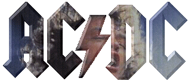

ROCKIN' IN THE PARLOUR
SINGLE: Rockin' In The Parlour/Can I Sit Next To You Girl (1974)
Sung by Dave Evans
(Young, Young, ??Evans??)
I met her in Caroline
Round about sixty-nine
Well she came up to me and said, "Hi there honey
How'd you like to come along"
CHORUS:
Cause we're gonna have a party
Yeah a rock 'n' roll party
Well we're gonna have a party
And before I knew
We were rockin' in the parlour
Rockin' in the parlour
Well the next time I saw her roll
Was way down in Mexico
She said, "I've got some booze around at my place
So come along and have some fun"
CHORUS
CAN I SIT NEXT TO YOU GIRL
SINGLE: Rockin' In The Parlour/Can I Sit Next To You Girl (1974)
Sung by Dave Evans
(Young, Young)
I met this girl for the first time on Saturday night
Standing in the queue at the Odeon alright
Then I took her by surprise
When I threw her one of my lines
She started smiling and being real fine
That's when I say-ay-ay-ay-ay-ay-ay
Can I sit next to you, girl?
At intermission we were doing alright
Until this guy came up and stood by her side
Then he took ME by surprise
When HE threw her one of my lines
She started smiling at him real fine
That's when he say-ay-ay-ay-ay-ay-ay
Can I sit next to you, girl?
CARRY ME HOME
SINGLE: Dog Eat Dog/Carry Me Home (197?)
(Young, Young, Scott)
The bartender's working on a late night shift
She's bonka blonds and Bon aims on a midnight drift
And the dance band's playing the same old slam
I'm sinking whiskey and you're sipping fine wine
I don't know what it is you're trying to prove
Well it should be you but it's me who can hardly move
And I've got my reputation lying on the line
Come on baby, be a good dog and help the blind
Won't you carry me home
(Like a truck, pick me up)
You ain't no lady but you've sure got taste in men
That head of yours has got you by time and time again
My arms and legs are aching and my head's about to blow
And your back's been breakin' and I'd hate to spoil the show
But I've just spent next weeks wages and I'm right out of coin
But you want more and it's half past four and they want to close the joint
But we can't afford a taxi, and it's too late for the bus
But I've been told by friends of mine you're someone I can trust
Won't you carry me home
(Don't let me lie here in all this beer)
You drank all your booze and half of mine
I'm bleary eyed and you're waiting for the sunshine (to come and kill me)
Just like the man who threw me on the floor
Don't matter, while I'm down here I might as well try and find the fucking door
Excuse me, have you seen my swizzle stick
And have you got a plastic bag 'cause I'm gonna be sick
I'm dead drunk and heave'n hanging upside down
And you're getting up and leaving, you think I'm gonna drown
Won't you carry me home
THE JACK (Full Live Version)
Cleveland 77 (Bootleg) (1977)
(Young, Young, Scott)
Here's a song of the record High Voltage
This one is a song about the clap
Now we call it `She's got the Jack'
We'd like to give this one to you
Psssst
Gonorrhea, oh no, I just had my first dose
Of gonorrhea
She gave me her mind
Then she gave me her body
But it seems to me
That she gave it to anybody
But I made her cry
And I made her scream (scream for me)
[Audience screams]
I took her high
And I curdled her cream
But how was I to know that she had been there before
She told me she was a virgin
She was number nine, ninety-nine on the clinical list
And I fell in love with the dirty little bitch
She's got the Jack
(I hate to tell you this darling)
I searched her mind
And then I searched her body
...But so did everybody
But she gave me her heart
And she gave me her soul
And a great, big - warn out
Empty hole
But how was I to know it had been filled in before
She said, "Bon, I've never had the urgency"
She was number nine, ninety-nine on the critical list
And I fell in love with the dirty little bitch
She's got the Jack
(I'll kill her)
(Oh and it hurts)
You know, I woke up one morning, and there it was on the sheets - the clap
Now I know you all call it the clap over here so what I'm gonna do
I'm gonna say "She's got the --", and I want you all to shout out
Just what it is she's got, in this case it's the clap
And if you wanna know who gave it to her, don't look at me
She's got the ...
(I wanna hear your voices)
She's got the ... clap
She's got the ... clap
She's got the ... clap
(That guy down there, whatta you doing?)
She's got the ... clap
(Yeah, you show me)
She's got the ... clap
She's got the ... clap
(She got that too, ha?)
She's got the ... clap
(I think what she needs ... is an Angus Young penicilian)
Angus Young
Alright
She's got the Jack
Oh yes she has
BABY PLEASE DON'T GO
High Voltage (Aus) (1974)
'74 Jailbreak (1984)
(Joe Williams)
Baby please don't go
Baby please don't go
Baby please don't go down to New Orleans
You know I love you so
Baby please don't go
When the man done gone
When the man done gone
When the man done gone down the county farm
He got the shackles on
Baby please don't go
Don't leave me
I'll be a dog
I'll be a dog
I'll be a dog kiss your way down here
When you walk along
Baby please don't go
Why must you leave me
Lying on my back
Going across the other side of the track
Found yourself a new man I know
So baby please don't go
Baby please don't go
Oh please, please don't leave me
I don't want to be left alone baby
Oh don't go, don't go, don't go
SHE'S GOT BALLS
High Voltage (Aus) (1974)
High Voltage (1976)
SINGLE: You Shook Me All Night Long/She's Got Balls (live) (1986)
Bonfire: Volts (1997)
(Young, Young, Scott)
She's got style that woman
Makes me smile that woman
She's got spunk that woman
Funk that woman
She's got speed my babe
Got what I need my babe
She's got the ability
To make a man outta me
CHORUS:
But most important of all
Let me tell you
My lady's got balls
She's got balls
She's got soul my lady
Likes to crawl my lady
All around the floor on her hands and knees
Oh because she likes to please me
CHORUS
And she's got taste my lady
Pace my lady
Makes my heart race
With her pretty face
She's got balls my lady
Likes to crawl my lady
Hands and knees all around the floor
No one has to tell her what a fella is for
CHORUS
LITTLE LOVER
High Voltage (Aus) (1974)
High Voltage (1976)
(Young, Young, Scott)
Saw you in the front row
Moving to the beat
(Just movin' and groovin')
Killed me when I saw
The wet patch on your seat
(Wasn't Coca Cola)
Oh baby
I hope you liked the show
When the band said good night
I had to say hello
CHORUS:
Little lover, I can't get you off my mind (no)
Little lover, I've been trying hard to find
Someone like you
Oh baby
You sure looked sweet
(Cruisin')
A leg either side
Of my motorcycle seat
(Just oozin')
Could have been a nightmare
Could have been a dream
But on my way home, baby
I thought I heard you scream
Little lover, I can't get you off my mind
Little Lover, I've been trying hard to find
someone to give me the things that I need, ow!
You had my picture
On your bedroom wall
(Next to Gary Glitter)
I was standing on the stage
Playing rock 'n' roll
(I was a guitar picker)
Never had a record
Never had a hit
Oh baby
You didn't mind a bit
CHORUS
Baby I know you're a -
Little lover
STICK AROUND
High Voltage (Aus) (1974)
(Young, Young, Scott)
You've been smiling lately baby
You've been singing in the bath
You've been acting like a lady
Not a dirty photograph
Then tonight you came home early
Packed a bag or two
It's been worrying me honey
Just what you're gonna do
Stick around, yeah, stick around
Stick around, babe, stick around
Well you came on like a hurricane
About a month ago
Blowing like a stiff breeze
Always on the go
All the good times that we had
All stayed in the past
All the good lays that I get
Never seem to last
Stick around, yeah, stick around
Stick around, babe, stick around
(Come on baby, sit on this)
What have I been doing lately
To make you wanna go
I take you out dancing
Honey we can go out to a show
Spend a night romancing
Nights out on the town
Listen to me baby
You'll be glad you stopped around
Stick around, yeah, stick around
Stick around, babe, stick around
SOUL STRIPPER
High Voltage (Aus) (1974)
'74 Jailbreak (1984)
(Young, Young)
Well, I met her in the garden
Underneath that old apple tree
Sitting with a handful of flowers
Looking as cool as can be
We talked away a couple of hours
Then she laid her hand on my lap
Oh, I thought I got to be dreaming
I didn't know I fell in her trap
CHORUS:
Then she made me say things I didn't want to say
Then she made me play games I didn't want to play
She was a soul stripper, she took my heart
Soul stripper, and tore me apart
She started moving nice and easy
Slowly getting into my spine
Killing off this nice little feeling
Ooooh, everyone she could find
And when she had me hollow and naked
That's when she put me down
Pulled out a knife and flashed it before me
Stuck it in and turned it around
CHORUS
YOU AIN'T GOT A HOLD ON ME
High Voltage (Aus) (1974)
'74 Jailbreak (1984)
(Young, Young, Scott)
You can roll me round your finger
You can roll me if I'm blind
You can roll me tally ho ho
I'm easy rollin' kind
But don't think I'm facin' down hill
'Cause soon you'll see
You'll lose your grip and slip
'Cause you ain't got a hold on me
CHORUS:
You ain't got a hold on me
You ain't got a hold on me
Why don't you let me free
'Cause you ain't got a hold on me
You can take me to your bedroom
You can take me to your heart
You can take me to a climax
I won't fall apart
But don't count on me givin' it
All back to you
Just because I'm hooked on livin
Doesn't mean I'm hooked on you
CHORUS
LOVE SONG
High Voltage (Aus) (1974)
(Young, Young, Scott)
I can tell by the look in your eye
I can tell by the way you sigh
That you know I've been thinking of you
And you know what I want to do
Oh Jean
When you smile I see stars in the sky
When you smile I see sunrise
And I know you've been thinking of me
And I know how you want it to be
Oh Jean
I can tell by the things you say
I can tell that you know the way
And I know what you want me to do
Oh, I've got hearts and flowers for you
If you leave me you'll make me cry
When I think of you saying good bye
Oh the sky turns to a deeper blue
That's - that's how I'd feel if I lost you
Oh Jean
SHOW BUSINESS
High Voltage (Aus) (1974)
'74 Jailbreak (1984)
(Young, Young, Scott)
You learn to sing
You learn to play
Why don't the businessman
Ever learn to pay
CHORUS:
That's show business
Show bizness
Show bizness
That's the way it goes
You play in halls
You play in bars
You're climbin' walls
Chasin' stars
CHORUS
You pay the men
You pay your dues
When it's all gone
You sing the blues
CHORUS
You wanna roll
You wanna rock
But you find it hard
If your guitar's in hock
CHORUS
We smoke our butts
They smoke cigars
We drown in debt
They drown in bars
CHORUS
You pull a chick
Take her home
No use, man
You're worn out to the bone
CHORUS
IT'S A LONG WAY TO THE TOP (IF YOU WANNA ROCK 'N' ROLL)
TNT (Aus) (1975)
High Voltage (1976)
SINGLE: It's A Long Way To The Top/Can I Sit Next To You Girl
Bonfire: Volts (1997)
(Young, Young, Scott)
Ridin' down the highway
Goin' to a show
Stop in all the by-ways
Playin' rock 'n' roll
Gettin' robbed
Gettin' stoned
Gettin' beat up
Broken boned
Gettin' had
Gettin' took
I tell you folks
It's harder than it looks
It's a long way to the top
If you wanna rock 'n' roll
It's a long way to the top
If you wanna rock 'n' roll
If you think it's easy doin' one night stands
Try playin' in a rock roll band
It's a long way to the top
If you wanna rock 'n' roll
Hotel, motel
Make you wanna cry
Lady do the hard sell
Know the reason why
Gettin' old
Gettin' grey
Gettin' ripped off
Under-paid
Gettin' sold
Second hand
That's how it goes
Playin' in a band
It's a long way to the top
If you wanna rock 'n' roll
It's a long way to the top
If you wanna rock 'n' roll
If you wanna be a star of stage and screen
Look out it's rough and mean
It's a long way to the top
If you wanna rock 'n' roll
It's a long way to the top
If you wanna rock 'n' roll
It's a long way to the top
If you wanna rock 'n' roll
It's a long way to the top
If you wanna rock 'n' roll
Well, it's a long way
It's a long way, (they tell me)
It's a long way, such a long way
ROCK 'N' ROLL SINGER
TNT (Aus) (1975)
High Voltage (1976)
(Young, Young, Scott)
My Daddy was workin' nine to five
When my Momma was havin' me
By the time I was half alive
I knew what I was gonna be
I left school and grew my hair
They didn't understand
They wanted me to be respected as
A doctor or a lawyer man
(But I had other plans)
Gonna be a rock 'n' roll singer
Gonna be a rock 'n' roll star
Gonna be a rock 'n' roll singer
I'm gonna be a rock 'n' roll,
A rock 'n' roll star
Well I worked real hard and bought myself
A rock 'n' roll guitar
I gotta be on top some day
I wanna be a star
I can see my name in lights
And I can see the queue
I got the devil in my blood
Tellin' me what to do
(And I'm all ears)
Gonna be a rock 'n' roll singer
Gonna be a rock 'n' roll star
Gonna be a rock 'n' roll singer
I'm gonna be a rock 'n' roll,
a rock 'n' roll star
(I hear it pays well)
Well you can stick your nine to five livin'
And your collar and your tie
And stick your moral standards
'Cause it's all a dirty lie
You can stick your golden handshake
And you can stick your silly rules
And all the other shit
That they teach to kids in school
('Cause I ain't no fool)
Gonna be a rock 'n' roll singer
Gonna be a rock 'n' roll star
Gonna be a rock 'n' roll singer
I'm gonna be a rock 'n' roll,
A rock 'n' roll star
Gonna be a rock 'n' roll singer
Gonna be a rock 'n' roll star
Gonna be a rock 'n' roll singer
I'm gonna be a rock 'n' roll,
A rock 'n' roll star.
Yes I are!
THE JACK
TNT (Aus) (1975)
High Voltage (1976)
SINGLE: Dirty Deeds Done Dirt Cheap/Big Balls-The Jack
Live version with different lyrics (first verse of Cleveland live):
If You Want Blood - You've Got It (1978)
LIVE (1992)
(Young, Young, Scott)
She gave me the Queen
She gave me the King
She was wheelin' and dealin'
Just doin' her thing
She was holdin' a pair
But I had to try
Her Deuce was wild
But my Ace was high
But how was I to know
That she'd been dealt with before
Said she'd never had a Full House
But I should have known
From the tattoo on her left leg
And the garter on her right
She'd have the card to bring me down
If she played it right
She's got the Jack
She's got the Jack
She's got the Jack
She's got the Jack
She's got the Jack
She's got the Jack
She's got the Jack
She's got the Jack
She's got the Jack, Jack, Jack, Jack, Jack, Jack, Jack
She's got the Jack
Poker face was her name
Poker face was her nature
Poker straight was her game
If she knew she could get you
She play'd 'em fast
And she play'd 'em hard
She could close her eyes
And feel every card
But how was I to know
That she'd been shuffled before
Said she'd never had a Royal Flush
But I should have known
That all the cards were comin'
From the bottom of the pack
And if I'd known what she was dealin' out
I'd have dealt it back
She's got the Jack
She's got the Jack
She's got the Jack, And who knows what else?
She's got the Jack, yeah, yeah
She's got the Jack
She's got the Jack
She's got the Jack
She's got the Jack
She's got the Jack, Jack, Jack, Jack, Jack, Jack, Jack
She's got the Jack
She's got the Jack
She's got the Jack, Ooh, was a bad deal, Jack
She gave me the Jack hey
She's got the Jack, She's got the Jack, She's got the Jack
Ooh, can't ya tell?
She's got the Jack, Jack, Jack, Jack, Jack, Jack, Jack
She's got the Jack, She's got the Jack
She's got the Jack, She's got the Jack
You Never know! She's got the Jack
She's got the Jack, She's got the Jack
She's got the Jack, and it hurts!
She's got the Jack
She's got the Jack, Jack, Jack, Jack, Jack, Jack, Jack
She's got the Jack
AAAAAAAAAAAAH!
Oooooh!
Thank you, thank you, Thank you people, Thank you, Thank you
I'm glad you like the show, yes, thank you very much folks.
Good night and God bless!
LIVE WIRE
TNT (Aus) (1975)
High Voltage (1976)
SINGLE: High Voltage/Live Wire
SINGLE: Touch Too Much/Live Wire(live)-Shot Down In Flames(live)
Live From The Atlantic Studios
(Young, Young, Scott)
Well if you're lookin' for trouble
I'm the man to see
If you're lookin' for satisfaction
I'm satisfaction guaranteed
I'm as cool as a body on ice
Or hotter than a rollin' dice
Send you to heaven
Take you to hell
I ain't foolin'
Can't you tell
I'm a live wire, I'm a live wire, I'm a live wire
Gonna set this town on fire
Well if you need some lovin'
And if you need some man
You've got the phone and the number
And I got no future plans
Oh come on honey you got nothin' to lose
You got the thirst 'n I got the booze
Give you an inch
Take you a mile
I wanna make you smile
I'm a live wire, Live Wire,
I'm a live wire, live wire
I'm a live wire, live wire
Holy smoke and sweet desire
Like a hot rod baby?
Oh stick this in your fuse box
Cooler than a body on ice
Hotter than a rollin' dice
Wilder than a drunken fight
You're gonna burn tonight
I'm a live wire, live wire
I'm a live wire, live wire
I'm a live wire, live wire
And I'm gonna set this town on fire
Live wire, live wire
I'm a live wire, live wire
Well I'm a live wire, live wire
I'm a live wire, live wire
I'm gonna burn, found me guilty
Burn, burn, burn, burn, burn, burn, burn
T.N.T.
TNT (Aus) (1975)
High Voltage (1976)
SINGLE: Let's Get It Up/TNT(live)-Back In Black(live) (1981)
LIVE (1992)
(Young, Young & Scott)
Oi, oi, oi, oi, oi, oi, oi, oi, oi, oi, oi, oi, oi, oi, oi
See me ride out of the sunset
On your colour TV screen
Out for all that I can get
If you know what I mean
Women to the left of me
And women to the right
Ain't got no gun
Ain't got no knife
But don't you start no fight
CHORUS:
'Cause I'm T.N.T. I'm dynamite
T.N.T. and I'll win the fight
T.N.T. I'm a power load
T.N.T. watch me explode
I'm dirty, mean and mighty unclean
I'm a wanted man
Public enemy number one
Understand
So lock up your daughter
Lock up your wife
Lock up your back door
And run for your life
The man is back in town
Don't you mess me 'round
CHORUS
T.N.T. Oi, oi, oi
T.N.T. Oi, oi, oi
T.N.T. Oi, oi, oi
T.N.T. Oi, oi, oi
T.N.T. Oi
I'm dynamite (oi, oi)
T.N.T. Oi,
And I'll win the fight,
T.N.T.
I'm a power load
T.N.T.
Watch me explode!
CAN I SIT NEXT TO YOU GIRL
(Different from before)
TNT (Aus) (1975)
High Voltage (1976)
SINGLE: It's A Long Way To The Top/Can I Sit Next To You Girl
(Young, Young)
I met this girl for the first time on Saturday night
Standing in the queue at the Odeon alright
Oh I took her by surprise
When I gave her one of my lines
She started smiling at me real fine (ha ha)
That's when I said
Can I sit next to you, girl
Can I sit next to you, girl
Can I sit next to you, girl
Can I sit next to you, girl
Can I sit next to you?
At intermission we were doing alright
Until this guy came up and stood by her side
Oh I took him by surprise
When I gave him one of my lines
She started smiling at me real fine
And that's when I said
Can I sit next to you, girl
Can I sit next to you, girl
Can I sit next to you, girl
Can I sit next to you, girl
Can I sit next to you
Can I sit next to you
Yeah, c'mon now!
So let me!
Can I sit next to you, girl
Can I sit next to you, girl
Can I sit next to you, girl
Can I sit next to you, girl
Can I sit next to you
Can I sit next to you, girl
Can I sit next to you, girl
Can I sit next to you, (Victoria? | lick your ear?)
Can I sit next to you, girl
Can I sit next to you, girl
C'mon!
Can I sit next to you, girl (9x)
Can I?
ROCKER
TNT (Aus) (1975)
Live From The Atlantic Studios (1977)
If You Want Blood - You've Got It (1978)
Dirty Deeds Done Dirt Cheap (1981)
(Young, Young & Scott)
I'm a rocker
I'm a roller
I'm a right out of controller
I'm a wheeler
I'm a dealer
I'm a wicked woman stealer
I'm a bruiser
I'm a cruiser
I'm a rockin' rollin' man
Got slicked back hair
Skin tight jeans
Cadillac car
And a teenage dream
I'm a rocker
I'm a roller
A rockin' rollin' man
Got lorex socks
Blue suede shoes
V8 car
And tattoos
I'm a rocker
I'm a roller
A rockin' rollin' man
HIGH VOLTAGE
TNT (Aus) (1975)
High Voltage (1976)
Live From the Atlantic Studios (1977)
If You Want Blood - You've Got It(live) (1978)
SINGLE: High Voltage/Live Wire (1980)
LIVE (1992)
(Young, Young & Scott)
(well) You ask me 'bout the clothes I wear
And you ask me why I grow my hair
And you ask me why I'm in a band
I dig doin' one night stands
and You wanna see me do my thing
All you gotta do is plug me into high
I said high
High voltage rock 'n' roll
High voltage rock 'n' roll
High voltage, High voltage
High voltage rock 'n' roll
rock 'n' roll
You ask me why I like to dance
And you ask me why I like to sing
And you ask me why I like to play
I got to get my kicks some way
and You ask me what I'm all about
Come and let me hear you shout high
I said high
High voltage rock 'n' roll
High voltage rock 'n' roll
High voltage, High voltage
High voltage rock 'n' roll
rock 'n' roll
I said high, I said high
Waaaah!
High voltage rock 'n' roll
High voltage rock 'n' roll
High voltage, high voltage
High voltage rock 'n' roll
(mumble, mumble...)
Spotlight, put the lights out, happy hour!
High voltage rock 'n' roll
High voltage rock 'n' roll
Wine, women and song
High voltage, high voltage
Wine women and song
High voltage rock 'n' roll
SCHOOL DAYS
TNT (Aus) (1975)
Bonfire: Volts (1997)
(Chuck Berry)
Up in the morning and out to school
The teacher is teaching the golden rule
American history and practical maths
[You] Studyin' hard and hoping to pass
Working your fingers right down to the bone
And the guy behind you won't leave you alone
Ring ring goes the bell
The cook in the lunch room is ready to sell [kitchen's ready to sell]
[But] You're lucky if you can find a seat
You're fortunate if you have time to eat
[Well] Back in the classroom open your books
Gee but the teacher don't know how mean she looks
Hail hail rock 'n' roll
[As] Soon as 3 o'clock rolls aroun'
You finally lay your burden down
Throw down your books and out of your seat
You go down the hallway, into the street
And you're tryin' to forget just where you've been
You find a juke joint, you go in
Drop the quarter into the slot
You gotta hear something that's really hot
With the one you love you're makin' romance
All day long you've been wanting to dance
Feeling the music from head to toe
Round and round and round you go
Long live rock 'n' roll
Rock, rock, rock 'n' roll
DIRTY DEEDS DONE DIRT CHEAP
Dirty Deeds Done Dirt Cheap (Aus) (1976)
Dirty Deeds Done Dirt Cheap (1981)
SINGLE: Dirty Deeds Done Dirt Cheap/Big Balls-The Jack
LIVE (1992)
(Young, Young, Scott)
If you're havin' trouble with your high school head
He's givin' you the blues
You wanna graduate but not in 'is bed [...but not in his debt]
Here's what you gotta do -
Pick up the phone
I'm always home
Call me any time
Just ring
36 24 36 hey [36 24 36 8]
I lead a life of crime
Dirty Deeds Done Dirt Cheap
Dirty Deeds and they're Done Dirt Cheap
You got problems in your life of love
You got a broken heart
(She's) He's double dealin' with your best friend
That's when the teardrops start - fella
Pick up the phone
I'm here alone
Or make a social call
Come right in
Forget about him
We'll have ourselves a ball
Dirty Deeds Done Dirt Cheap
Dirty Deeds and they're Done Dirt Cheap
If you got a lady and you want her gone
But you ain't got the guts
She keeps naggin' at you night and day
Enough to drive you nuts -
Pick up the phone
Leave her alone
It's time you made a stand
For a fee
I'm happy to be
Your back door man
Dirty Deeds Done Dirt Cheap
Dirty Deeds and they're Done Dirt Cheap
Concrete shoes, cyanide, TNT
Done Dirt Cheap
Neckties, contracts, high voltage
Done Dirt Cheap
AIN'T NO FUN (WAITING ROUND TO BE A MILLIONAIRE)
Dirty Deeds Done Dirt Cheap (Aus) (1976)
Dirty Deeds Done Dirt Cheap (1981)
(Young, Young & Scott)
The following is a true story
Only the names have been changed
To protect the guilty -
Well I left my job in my home town
And I headed for the smoke
Got a rock 'n' roll band and a fast right hand
Gonna get to the top
Nothing's gonna stop us, no nothing
So if you've got the money, we've got the sound
You put it up and we'll put it down
If you got the dollar, we got the song
Just wanna boogie woogie all night long
Yeh boogie
I got holes in my shoes
I got holes in my teeth
I got holes in my socks
I can't get no sleep
I'm trying to make a million
And I got patches on the patches
On my old blue jeans
Well they used to be blue
When they used to be new
When they used to be clean
But I've got a Momma whose a hummer [and I've got a mama, whose a hummer]
Whose keeping me alive [[just] keepin' me alive]
While I'm in the band doing drinking with the boys [while I'm doin' drinkin
She's working 9 to 5 with the boys]
[She] knows her place that woman
Just you wait -
One of these days see me driving round town
In my rock 'n' Rolls Royce with the sun roof down
My bottle of booze
No summer time blues
Shouting out, "Look at me"
In my rock 'n' roll voice
Ain't no fun waiting round to be a millionaire
repeat
"Hey hello Howard, how you doin', my next door neighbour?"
"Oh yea... Get your fuckin' jumbo jet off my airport"
THERE'S GONNA BE SOME ROCKIN'
Dirty Deeds Done Dirt Cheap (Aus) (1976)
Dirty Deeds Done Dirt Cheap (1981)
(Young, Young & Scott)
Well me and the boys
Are out to have some fun
Gonna put on a show
Come on, let's go
CHORUS:
There's gonna be some rockin'
There's gonna be some rockin'
There's gonna be some rockin' at the show tonight
Every night
There's a rock 'n' roll Queen
Gonna quiver and quake
Gonna shake her thing
CHORUS
(It's a rock 'n' roll show)
We got a big fat sound
Wanna share it round
Got a big bass drum
Gonna have some fun
CHORUS
PROBLEM CHILD
Dirty Deeds Done Dirt Cheap (Aus) (1976)
Live at the Atlantic Studios (1977)
Let There Be Rock (US/Can) (1977)
SINGLE: Let There Be Rock/Problem Child (US/Can, Aus?) (1977)
If You Want Blood - You've Got It(live) (1978)
Dirty Deeds Done Dirt Cheap (1981)
(Young, Young & Scott)
(cut this)
I'm hot
And when I'm not
I'm cold as ice
See me comin' [Get out of my way]
Step aside [just step aside]
Or pay the price
What I want I take
What I don't I break
And I don't want you
With a flick of my knife
I can change your life
There's nothing you can do
Cause I'm a problem child
Make my stand
No man's land
On my own
Man in blue
It's up to you
The seed is sown
What I want I stash
What I don't I smash
N' you're on my list
Dead or alive
Got a .45
N' I never miss
Cause I'm a problem child
Every night
Street light
I drink my booze
Some run
Some fight
I win they lose
What I need I like
What I don't I fight
N' I don't like you
So say bye bye
While your still alive
Cause your time is due
Cause I'm a problem child
SQUEALER
Dirty Deeds Done Dirt Cheap (Aus) (1976)
Dirty Deeds Done Dirt Cheap (1981)
(Young, Young & Scott)
She said she'd never been
Never been touched before
She said she'd never been
This far before
She said she'd never liked
To be excited
She said she'd always had
Had to fight it (and she never won)
She said she'd never been
Never been balled before
N' I don't think
She'll ever ball no more (fixed 'er good)
Hey Squealer - when I held her hand
Squealer - made her understand
Squealer - when I kissed her lips
Squealer - and sucked her finger tips
Squealer - she started getting hot
Squealer - made it hard to stop
Squealer - it got too much
Squealer - I think I've got the magic touch
BIG BALLS
Dirty Deeds Done Dirt Cheap (Aus) (1976)
Dirty Deeds Done Dirt Cheap (1981)
SINGLE: Dirty Deeds Done Dirt Cheap/Big Balls-The Jack
(Young, Young, Scott)
I'm [ever | rather] upper class high society
God's gift to ballroom notoriety
I always fill my ballroom
The event is never small
The social pages say I've got
The biggest balls of all
CHORUS:
I've got big balls
I've got big balls
And they're such big balls
Dirty big balls
And he's got big balls
And she's got big balls
But we've got the biggest balls of them all
And my balls are always bouncing
My ballroom always full
And everybody cums and cums again
If your name is on the guest list
No one can take you higher
Everybody says I've got
Great balls of fire
CHORUS
Some balls are held for charity
And some for fancy dress
But when they're held for pleasure
They're the balls that I like best
My balls are always bouncing
To the left and to the right
It's my belief that my big balls
Should be held every night
CHORUS
And I'm just itching to tell you about them
Oh we had such wonderful fun
Seafood cocktail, crabs, crayfish...
Ball sucker
R.I.P. (ROCK IN PEACE)
Dirty Deeds Done Dirt Cheap (Aus) (1976)
(Young, Young & Scott)
Leave me alone
Like a dog with a bone
Like a stone that's been thrown
Let me be on my own
CHORUS:
Let me rock
Let me roll
Let me rock
Let me rock in peace
Outta my way
Got a boogie to play
Every dog has his day
Rock 'n' roll's here to stay
CHORUS
(Feels good, for my mama, just like I knew it would)
I get my kicks
Outta playin' my licks
Outta layin' my chicks
Down on Route 66
CHORUS
Rock, rock, rock in peace
Outta my way
Got a boogie to play
Every dog has his day
Rock 'n' roll's here to stay
CHORUS
Rock, rock, rock in peace
Like Little Richard
Oh Jerry Lee
Chuck baby
I wanna rock
Let me rock in peace
RIDE ON
Dirty Deeds Done Dirt Cheap (Aus) (1976)
Dirty Deeds Done Dirt Cheap (1981)
Who Made Who (1986)
Bonfire: Volts (1997)
(Young, Young & Scott)
It's another lonely evening
And another lonely town
But I ain't too young to worry
And I ain't too old to cry
When a woman gets me down
Got another empty bottle
And another empty bed
Ain't too young to admit it
And I'm not too old to lie
I'm just another empty head
That's why I'm lonely
I'm so lonely
But I know what I'm gonna do -
I'm gonna ride on
Ride on
Ride on, standing on the edge of the road
Ride on, thumb in the air
Ride on, one of these days I'm gonna
Ride on, change my evil ways
Till then I'll just keep ridin' on
Broke another promise
And I broke another heart
But I ain't too young to realize
That I ain't too old to try
Try to get back to the start
And it's another red light nightmare
Another red light street
And I ain't too old to hurry
Cause I ain't too old to die
But I sure am hard to beat
But I'm lonely
Lord I'm lonely
What am I gonna do -
Ride on
Ride on, got myself a one-way ticket
Ride on
Ride on, going the wrong way
Ride on, gonna change my evil ways
Ride on, one of these days
One of these days
Ride on
Ride on
I'm gonna ride on
Ride on, looking for a truck
Ride on
Ride on, keep on riding
Riding on and on and on
JAILBREAK
Dirty Deeds Done Dirt Cheap (Aus) (1976)
'74 Jailbreak (1984)
LIVE (1992)
SINGLE: Jailbreak/Fling Thing
SINGLE: Shake Your Foundations/Stand Up-Jailbreak(live)
(Young, Young & Scott)
There was a friend of mine on murder
And the judge's gavel fell
Jury found him guilty
Gave him sixteen years in hell
He said "I ain't spending my life here
I ain't living alone
Ain't breaking no rocks on the chain gang
I'm breakin' out and headin' home
Gonna make a jailbreak
And I'm lookin' towards the sky
I'm gonna make a jailbreak
Oh, how I wish that I could fly
All in the name of liberty
All in the name of liberty
Got to be free
Jailbreak, let me out of here
Jailbreak, sixteen years
Jailbreak, had more than I can take
Jailbreak, yeah"
He said he'd seen his lady being fooled with
By another man
She was down and he was up
He had a gun in his hand
Bullets started flying everywhere
And people started to scream
Big man lying on the ground
With a hole in his body
Where his life had been
But it was -
All in the name of liberty
All in the name of liberty
I got to be free
Jailbreak, jailbreak
I got to break out
Out of here
Heartbeats they were racin'
Freedom he was chasin'
Spotlights, sirens, rifles firing
But he made it out
With a bullet in his back
LOVE AT FIRST FEEL
Dirty Deeds Done Dirt Cheap (1981)
(Young, Young, Scott)
You never told me where you came from
You never told me your name
I didn't know if you were legal tender
But I spent you just the same
I didn't think it could happen to me
But I fell in love in the first degree -
It was love at first feel
(I was touched with too much)
They told me it was disgustin'
They told me it was a sin
They saw me knocking on your front door
And they saw me smile when you let me in
You and me baby we're all alone
Let's get something goin'
While your mum and dad ain't home -
It was love at first feel
(Feel good just like I knew it would)
GO DOWN
Let There Be Rock (1977)
(Young, Young, Scott)
Ruby, Ruby, where you been so long?
Don't stop drinking whiskey baby since you been gone
Ain't no one I know do it as good as you
Licking on that licking stick the way you do
You got the lips to make a strong man weak and a heathen pray
Givin' you the jump it ain't the way you speak, Lord it's just the way
Go down
Mary, Mary, you're the one for me
And the way you hum, sting like a bumble bee bzzzz
I'll be around to see you about, about half past ten
Ain't felt this good since I don't know when
You got the touch that I need so much in your finger tips
I got honey what you love to taste on those lovely lips
So go down
Oh baby, rub it on
It's still as sweet, [yeah it's sticky and sweet,]
It's been so long [and it's been so long]
And no else got a touch like you [ain't no one else...]
I let you do the things to me [I'll let you do little things to me]
that no other women do
It feels good, it feels good, oh yeah
Girl you do it like you should (?)
I loved it so much
You make a ??? of a man (You make me glad I'm a man)
Go down
DOG EAT DOG
Let There Be Rock (1977)
SINGLE: Dog Eat Dog/Carry Me Home
SINGLE: Let There Be Rock/Dog Eat Dog (1977)
Live at the Atlantic Studios (1977)
(Young, Young, Scott)
Well it's a dog eat dog
Eat cat too
The French eat frog
And I eat you
Businessman, when you make a deal
Do you know who you can trust?
Do you sign your life away?
Do you write your name in dust?
CHORUS:
Hey, hey, hey
Every dog has his day
It's a dog eat dog
Dog eat dog
"Dog eat dog"
Read the news
Someone win
Someone lose
Up's above and down's below
And limbo's inbetween
Up you win, down you lose
It's anybody's game
CHORUS
And it's a eye for eye
Tooth for tooth
It's a lie
That's the truth
See a blind man on the street
Looking for something free
Hear the kind man ask his friends
"Hey, what's in it for me?"
CHORUS
LET THERE BE ROCK
Let There Be Rock (1977)
If You Want Blood - You've Got It (live) (1978)
SINGLE: Let There Be Rock/Problem Child (Can? Aus?) (1977)
SINGLE: Let There Be Rock/Dog Eat Dog (1977)
SINGLE: For Those About To Rock/Let There Be Rock(live) (1981)
LIVE (1992)
(Young, Young, Scott)
In the beginning
Back in nineteen fifty-five
Man didn't know about a rock 'n' roll show
And all that jive
The white man had the smoltz
The black man had the blues
No one knew what they was gonna do
But Tchaikovsky had the news
He said -
"Let there be sound", and there was sound
"Let there be light", and there was light
"Let there be drums", and there was drums
"Let there be guitar", and there was guitar
"Let there be rock"
And it came to pass
That rock 'n' roll was born
All across the land every rockin' band
Was blowing up a storm
The guitarman got famous
The businessman got rich
And in every bar there was a super star
With a seven year itch
There were fifteen million fingers
Learning how to play
And you could hear the fingers picking
And this is what they had to say
"Let there be light"
"Sound"
"Drums"
"Guitar"
"Let there be rock"
One night in a club called `The Shaking Hand'
There was a ninety-two decibel rocking band
The music was good and the music was loud
And the singer turned and he said to the crowd -
"Let there be rock"
BAD BOY BOOGIE
Let There Be Rock (1977)
If You Want Blood - You've Got It (live) (1978)
(Young, Young, Scott)
On the day I was born the rain fell down
There was trouble brewing in my home town
It was the seventh day, I was the seventh son
And it scared the hell out of everyone
They said stop, I said go
They said fast, I said slow
They said yes, I said no
I do the bad boy boogie
Being a bad boy ain't that bad
I've had me more dirty women than most men ever had
All you women come along with me
And I'll show you how good a bad boy can be
I said right and they said left
I said east and they said west
I said up and they said down
I do the bad boy boogie all over town
I wanna tell you no story, tell you no lie
I was born to love till the day I die
I just line them up and I knock them down
And they all came running when the word got round
(Just keep a running)
I said up, they said down
They said straight, I said round
They said lost, I said found
I said free and they said bound
Bad boy boogie
OVERDOSE
Let There Be Rock (1977)
(Young, Young, Scott)
I never smoked with no cigarettes
I never drank much booze
But I'm only a man, don't you understand
And a man can sometimes lose
You gave me something I never had
Pulled me down with you
Pulled me up, think I'm in love
Hope you can pull me through
CHORUS:
I overdosed on you
I overdosed on you
Crazy but it's true
Ain't nothing I can do
I overdosed on you
Oh woman you give to me
More than I can take
But listen honey, I don't mind
You're a habit I don't want to break
Don't want none of that hard stuff
Don't need it anymore
I'm in love, and I'm sinking fast
And I don't need no cure
CHORUS
Gee I was happy as a man could be
To far gone to escape
Power of love, don't pull me off
Just write on my grave:
CHORUS
CRABSODY IN BLUE
Let There Be Rock (1977)
(Young, Young, Scott)
Well they moved on down
And they crawled around
Walking sideways
Sideway walking
Give me the blues
And you start to scratch
When they start to hatch
Walking sideways
Sideway walking
Give me the blues
But when they start to bite
Then it's time you set alight
For an appointment
Before you start to scream
That's when you apply the cream
Blues ointment
Well the doctor said
"We got to make our beds" [We got to make 'em dead]
Walking sideways
Sideway walking
Give me the blues
And when you start to scream
That's when you'll buy the cream
Blues ointment
And when they start to itch
You go out and you take a bitch
For an appointment
Well you rub it on
And you rub it in
Stops them walking
Sideway walking
Gives them the blues
HELL AIN'T A BAD PLACE TO BE
Let There Be Rock (1977)
Live at the Atlantic Studios (1977)
If You Want Blood - You've Got It (live) (1978)
SINGLE: Whole Lotta Rosie(live)/Hell Ain't A Bad Place To Be(live) (1978)
SINGLE: Girls Got Rhythm -If You Want Blood/
Hell Ain't A Bad Place To Be(live)-Rock'N'Roll Damnation(live) (1979)
(Young, Young, Scott)
Hey you -
Sometimes I think this woman is kinda hot
Sometimes I think this woman is sometimes not
Puts me down, fools me around
What's she doing to me?
Out for satisfaction, any piece of action
That ain't the way it should be
She needs love, smells out a man
She's gotta see
Pours my beer, licks my ear
Brings out the devil in me
Hell ain't a bad place to be
Spends my money, drinks my booze, stays out every night
And I got to thinking, "Hey, just a minute, something ain't right"
Disillusions and confusion
Make me want to cry
All the same, you lead your games
Tellin' me your lies
Don't mind her playing a demon
As long as it's with me
If this is hell then you could say
It's heavenly
Hell ain't a bad place to be
Late at night turns down the lights
Closes up on me
Opens my heart, tears it apart
Brings out the devil in me
Hell ain't no bad place to be
WHOLE LOTTA ROSIE
Let There Be Rock (1977)
Live at the Atlantic Studios (1977)
If You Want Blood - You've Got It (live) (1978)
SINGLE: Whole Lotta Rosie(live)/Hell Ain't A Bad Place To Be(live) (1978)
LIVE (1992)
(Young, Young, Scott)
Wanna tell you a story
'Bout a woman I know
When it comes to lovin'
Oh she steals the show
She ain't exactly pretty
Ain't exactly small
Forty-two, thirty-nine, fifty-six
You could say she's got it all
Never had a woman
Never had a woman like you
Doing all the things
Doing all the things you do
Ain't no fairy story
Ain't no skin and bone
But you give it all you got
Weighing in at nineteen stone
CHORUS:
You're a whole lotta woman
A whole lotta woman
Whole lotta Rosie
And you're a whole lotta woman
Oh honey you can do it
Do it to me all night long
Only one to turn
Only one to turn me on
All through the night time
And right around the clock
To my surprise
Rosie never stops
CHORUS
ROCK'N'ROLL DAMNATION
Powerage (1978)
If You Want Blood - You've Got It (live) (1978)
SINGLE: Rock'N'Roll Damnation/Sin City (1978)
SINGLE: Girls Got Rhythm-If You Want Blood/
Hell Ain't A Bad Place To Be(live)-Rock'N'Roll Damnation(live) (1979)
(Young, Young, Scott)
They say that you play too loud
Well baby that's tough
They say that you got too much
Can't get enough
They tell you that you look a fool
And baby I'm a fool for you
They say that your mind's diseased
Shake your stuff
CHORUS:
And it's a rock 'n' roll damnation
Ma's own whippin' boy
Rock 'n' roll damnation
Take a chance while you still got the choice
You say that you want respect
Honey for what?
For everything that you've done for me
Thanks a lot
Get up off your bended knees
You could set your mind at ease
My temperature's running hot
I've been waiting all night for a bite of what you got
CHORUS
Well it's a hard life
Damnation, they're puttin' you down
Damnation, all over town
Damnation, cause you're way outta reach
Livin' on the streets you gotta practice what you preach
CHORUS
Damnation, left a happy home
Damnation, to live on your own
Damnation, you want to live in sin
Damnation, it's a rock 'n' roll -
Damnation, just a bundle of joy
Damnation, you're a toy for a boy
Damnation, you got dollars in your eye
Damnation, chasin' that pie in the sky
Damnation, rock 'n' roll -
Damnation
GIMME A BULLET
Powerage (1978)
(Young, Young & Scott)
She had the word
Had the way
The way of letting me know [the way of letting you know]
She knew the game
Called the play
Oh she hit me low
She said, "Now you go your way
I'll go mine
And that's a start"
Doctor, doctor
Ain't no cure
For the pain in my heart
CHORUS:
Gimme a bullet to bite on
Something to chew
Gimme a bullet to bite on
And I'll make believe
I'll make believe it's you
Don't need no drink
Don't need no drug
Don't need no sympathy
Sooner or later
Send me a bill
For what she's doing to me
Operator
Long distance lips
On the telephone
Come tomorrow
Come to grips
With being all alone
CHORUS
Bullet to bite on
Gimme a bullet to bite on
Yeah
cmon now
yeah yeah
bullet to bite on
yeah yeah
bullet to chew
I need something to chew (bullet to bite on)
I'll make believe it's you
Gimme a bullet to bite on
Oh, you're a bullet baby
I want a bullet to bite on
A bullet
DOWN PAYMENT BLUES
Powerage (1978)
(Young, Young, and Scott)
I know that it's evil
I know that it's got to be
I know I ain't doing much
Doing nothing means a lot to me
Living on a shoe string
A fifty cent millionaire
Open to charity
Rock 'n' roller welfare
Sitting in my Cadillac
Listening to my radio
Suzy baby get on in
Tell me where she want to go
I'm living in a nightmare
She's looking like a wet dream
I got myself a Cadillac
But I can't afford the gasoline
CHORUS:
I've got holes in my shoes
And I'm way overdue
Down payment blues
Get myself a steady job
Some responsibility
Can't even feed my cat
On social security
Hiding from the rent man
Oh it makes me want to cry
Sheriff knocking on my door
Ain't it funny how the time flies
Sitting on my sailing boat
Sipping off my champaigne
Suzy baby all at sea [Suzy baby you're obscene]
Say she want to come again
Feeling like a paper cup
[Floating | Blowing] down a storm drain
Got myself a sailing boat
But I can't afford the gasoline [...afford a drop of rain]
CHORUS
Down payment blues
Down payment blues
Down payment blues
I've got holes in my shoes
and I'm way overdue
I got the down payment blues
GONE SHOOTIN'
Powerage (1978)
Beavis and Butthead Do America Soundtrack (1996)
(Young, Young & Scott)
Feel the pressure rise
Hear the whistle blow
Found a ticket of her own accord
To I don't know
Packed her heart in a travelling bag [Fought so hard in a travelin' band]
And never said bye bye
Somethings missing in the neighbourhood
All the cryin' eyes
I stirred my coffee with the same spoon [a stupor caught me with the sin spoon]
Do a favourite tune [to her favourite jewel]
Gone shootin'
My baby's gone shootin'
Wrap yourself around
Like a second skin
Packed her favourite bag [packed|picked her favourite nag]
But she could never win
I took your number in another town
She took another pill
She was runnin' in overdrive
Up until my overkill [a victim of overkill]
She never made it past the bedroom door
What was she aiming for? [why I'd thought she'd even pour]
Gone shootin'
She's gone, gone gone gone
Gone shootin'
My baby's gone shootin'
Lil' child
Gone Shootin'
I thought that she wouldn't even know
Gone Shootin
hey look out, look out, look out, look out!
Gone shootin
She's shootin heroin!
Gone shootin
She's shootin loaded
She's gone, she's gone, she's gone, she's gone
Gone shootin
I used to love her so
RIFF RAFF
Powerage (1978)
If You Want Blood - You've Got It (live) (1978)
(Young, Young, and Scott)
See it on the television every day
Hear it on the radio
It ain't humid but it sure is hot
Down in Mexico
The boy is trying to tell me
Near enough to the edge (beginning of the end)
Say they've all been there
Too late my friend
Riff raff
Always good for a laugh (ha ha ha)
Riff raff
Go on, laugh yourself in half
(Smile awhile)
Now I'm the kind of guy who keeps his big mouth shut
Don't bother me
Somebody give me one arm up
Leave me in misery
I've never shot nobody
Don't even carry a gun
I ain't done nothing wrong
I'm just having fun
Riff raff
Always good for a laugh
Riff raff
Go on, laugh yourself in half
do it again
SIN CITY
Powerage (1978)
SINGLE: Rock'N'Roll Damnation/Sin City (1978)
SINGLE: Nervous Shakedown-Rock And Roll Ain't Noise Pollution(live)/
Sin City(live)-This House Is On Fire(live) (1983)
LIVE (1992)
Bonfire: Volts (1997)
(Young, Young, Scott)
Diamonds and dust
Poor man last, rich man first
Lambourginis, caviar
Dry martinis, Shangri-la
I got a burning feeling
Deep inside of me
It's yearning
But I'm going to set it free
CHORUS:
I'm going in to sin city
I'm gonna win in sin city
Where the lights are bright
Do the town tonight
I'm gonna win in sin city
([I'm gonna | oh, let me] roll you baby)
(Snake eyes)
Ladders and snakes
Ladders give, snakes take
Rich man, poor man, beggarman, thief
Ain't got a hope in hell, that's my belief
Fingers Freddy, Diamond Jim
They're getting ready, [Better get ready,]
look out I'm coming in ['coz I'm coming in]
So spin that wheel, cut that [pack | deck]
And roll those loaded dice
Bring on the dancing girls
And put the champaigne on ice
CHORUS
UP TO MY NECK IN YOU
Powerage (1978)
(Young, Young, Scott)
Well I've been up to my neck in trouble
Up to my neck in strife
Up to my neck in misery
For most of my life
I've been a fool
And you know what a fool can do
I'm telling you
You came along when I needed you
Now I'm up, I'm up to my neck in you
And I've been up to my neck in pleasure
Up to my neck in pain
I've been up to my neck on the railroad track
Waitin' for the train
To cruise on through
Well baby my time is due
Oh it's way overdue
You came along and you pulled me through
Now I'm up, up, up to my neck in you
and don't it feel good
Well I've been up to my neck in whiskey
I've been up to my neck in wine
I've been up to my neck in wishing
That this neck wasn't mine
I was a loser
You weren't lost
Baby you were too good, too good to be true
What you've got no one else could do
Now I'm up, I'm up to my neck in you
Yeah you came along when I needed you
Oh I'm up to my neck in you
WHAT'S NEXT TO THE MOON
Powerage (1978)
(Young, Young,Scott)
Well I tied my baby to the railroad track
Cannonball down the line
Giving that woman just a one more chance
To give it to me one more time
Engineer wishing he was home in bed
Dreaming about Casey Jones
Wide-eyed woman heading a mile ahead [...woman half a mile ahead]
Thinking about broken bones
CHORUS:
It's her love that I want
It's her love that I need
It's her love got to have
It's her love
Heavenly body flying across the sky
Superman was out of town
Come on honey, gotta change your tune
Cause it's a long way down
Clark Kent looking for a free ride
Thinking about Lois Lane
It's a bird, it's a plane, it's - a suicide
And that'd be a shame
CHORUS
But what's next to the moon?
Long Arm looking for a fingerprint
Trying to find the mystery clue
Hitting me with the third degree
Working on a thumb screw
Alright, officer, I confess
Everything's coming back
I didn't mean to hurt that woman of mine
It was a heart attack
It's her love that I want
It's her love that I need
It's her love got to have
It's her love guaranteed
the love that I want
it's your love that I need
it's your love got to have
it's your love
What's next to the moon?
across the skies
oh baby say bye bye
oh what's next to the moon
what's next to the moon
oh what's next to the moon
KICKED IN THE TEETH
Powerage (1978)
(Young, Young, Scott)
Two faced woman with the two faced lies
I hope your two faced living made you satisfied
Tell me baby I was your only one
While you've been running around town with every mother's son
Told your story about the women like you
Told your story about the things you do
I used to think that you were sugar and spice
I should've listened to my mother's advice
Kicked in the teeth again
Sometimes you lose, sometimes you win
Kicked in the teeth again
Ain't this misery ever gonna end?
And I've been kicked in the teeth
Kicked in the teeth again
Two faced woman, such a crying shame
Don't know nothing, you're all the same
You run around, hope you had your fun
You never know who's gonna win till the race been run
Kicked in the teeth again
Sometimes you lose, sometimes you win
Kicked in the teeth again
Ain't this misery ever gonna end?
I've been kicked in the teeth
Kicked in the teeth
Kicked in the teeth again
COLD HEARTED MAN
Powerage (all but Aus?) (1978)
Bonus Single, LP Box Set (Aus) (1980??)
(Young, Young, Scott)
No one knew
Where he came from
He never knew himself
Call her Ma
Call him Pa
But he was born to someone else
No one fooled
Or messed him around
Cause they were all afraid
Ain't no lies
Ice in the eyes
Of Leeroy Kincaid
CHORUS:
Cold hearted man
One time lover heart in his hand
Cold hearted man
And you can't trust nothing you don't understand
Cold hearted man
Cold hearted man
Like a snake
He had no friends
He didn't need no one
Hurt his pride
Deep inside
He was another mother's son
Reputation
Broken glass
Everybody prayed
For their lives on the street
Where they happened to meet
Leeroy Kincaid
CHORUS
Sometimes you can't see
The other side
It's too well hidden
For the naked eye
One time lover
With his heart in his hand
Two time loser
A broken man
Cold hearted man
HIGHWAY TO HELL
Highway To Hell (1979)
SINGLE: Highway To Hell/If You Want Blood (1979)
Live (1992)
(Young, Young, Scott)
Living easy, living free
Season ticket on a one-way ride
Asking nothing, leave me be
Taking everything in my stride
Don't need reason, don't need rhyme
Ain't nothing I would rather do
Going down, party time
My friends are gonna be there too
I'm on the highway to hell
No stop signs, speed limit
Nobody's gonna slow me down
Like a wheel, gonna spin it
Nobody's gonna mess me round
Hey Satan, payed my dues
Playing in a rocking band
Hey Momma, look at me
I'm on my way to the promised land
I'm on the highway to hell
(Don't stop me)
And I'm going down, all the way down
I'm on the highway to hell
GIRLS GOT RHYTHM
Highway To Hell (1979)
SINGLE: Girls Got Rhythm/Get It Hot (1979)
SINGLE: Girls Got Rhythm-If You Want Blood/
Hell Ain't A Bad Place To Be(live)-Rock'N'Roll Damnation(live) (1979)
(Young, Young, Scott)
I've been around the world
I've seen a million girls
Ain't one of them got
What my lady she's got
She steals the spotlight
Knocks me off my feet
She's enough to start a landslide
Just a walkin' down the street
Wearing dresses so tight
And looking dynamite
Enough to blow me out
No doubt about it can't live without it
CHORUS:
The girl's got rhythm (girl's got rhythm)
The girl's got rhythm (girl's got rhythm)
She's got the backseat rhythm (backseat rhythm)
The girl's got rhythm
She's like a lethal brand
Too much for any man
She gives me first degree
She really satisfies me
Love me till I'm legless
Aching and sore
Enough to stop a freight train
Or start the Third World War
You know I'm losin' sleep
I'm in too deep
Like a body needs blood
No doubt about it can't live without it
CHORUS
You know she moves like sin
And when she lets me in
It's like liquid love
No doubt about it can't live without it
The girl's got rhythm (girl's got rhythm)
The girl's got rhythm (girl's got rhythm)
She's got the backseat rhythm (backseat rhythm)
The girl's got rhythm (girl's got rhythm)
You know she really got the rhythm (girl's got rhythm)
She's got the backseat rhythm (backseat rhythm)
Rock 'n' roll rhythm (rock n roll rhythm)
The girl's got rhythm
WALK ALL OVER YOU
Highway To Hell (1979)
(Young, Young & Scott)
Out of my way I'm running high
Take your chance with me and I'll give it a try
Ain't no woman in the world I know
'Cause I ain't looking for (an overflow?)
Oh baby I ain't got much
Resistance to your touch
Take off the high heels, let down your hair
Paradise ain't far from there
I wanna walk all over you
I wanna walk all over you
Do anything you want me to, baby
I wanna walk all over you
Reflections on the bedroom wall
And there you thought you'd see it all
We're rising, falling like the sea
You're looking so good under me
I'm gonna walk all over you
I'm gonna walk all over you
Do anything you want me to do to you
I'm gonna walk all over you
(Roaming, roaming, stayin' alive)(?)
So give me the stage, I'm gonna steal the show
(Leave off the (lace?) and turn off the light
Tonight is gonna be the night
I'm gonna walk all over you
I'm gonna walk all over you
Do anything you want me to
I'm gonna walk all over you
Ow.
I'm gonna walk all over you
TOUCH TOO MUCH
Highway To Hell (1979)
SINGLE: Touch Too Much/Live Wire(live)-Shot Down In Flames(live) (1979)
(Young, Young, Scott)
It was one of those nights
When you turned out the lights
And everything comes into view
She was taking her time
I was losing my mind
There was nothing that she wouldn't do
It wasn't the first
It wasn't the last
She knew we was making love
I was so satisfied
Deep down inside
Like a hand in a velvet glove
CHORUS:
Seems like a touch, a touch too much
Seems like a touch, a touch too much
Too much for my body, too much for my brain
This kind of woman's gonna drive me insane
She's got a touch, a touch too much
She had the face of an angel
Smiling with sin
A body of Venus with arms
Dealing with danger
Stroking my skin
Let the thunder and lightening start
It wasn't the first
It wasn't the last
It wasn't that she didn't care
She wanted it hard
And wanted it fast
She liked it done medium rare
CHORUS
Seems like a touch, touch too much
You know it's much too much, much too much
I really want to feel your touch too much
Girl you know you're getting me much too much
Seems like a touch
Just a dirty little touch
I really need your touch
Cause you're much too much too much
CHORUS
BEATING AROUND THE BUSH
Highway To Hell (1979)
(Young, Young, Scott)
Smiling face and [loving | laughing] eyes
But you keep on telling me all those lies
How do you expect me to believe
Honey I ain't that naive
Baby I got my eye on you
[But | cause] you do all the things that I want you to
Stop your crying and dry your tears
I ain't that wet behind the ears
You can throw me left
And you can throw me right
but where was you last night
Beating around the bush
Wish I knew what's on your mind
Why you're being so unkind?
Remember those nights you spent alone [...nights of stayin' alone]
Talking on the telephone?
Thoughts of you go through my brain
You told me that you felt the same
You told me that you love me too (?)
Tell me who would lie with you?
I was talking birds [I was talking about birds]
And you was talking bees [And you was talking about bees]
Was he was down upon his knees
Beating around the bush
You're the meanest woman I've ever known
Sticks and stones won't break my bones
I know what you're looking for
You ate your cake, you want some more
I'm gonna give you just a one more chance
Try to save our romance
Done everything I'm gonna do [That's all I'm gonna do]
The rest is up to you
You can chew it up
And you can spit it out
Let it all hang out
Beating around the bush
Oh.
Chew it up
Spit it out
Let it all hang out
Beating around the bush
SHOT DOWN IN FLAMES
Highway To Hell (1979)
SINGLE: Touch Too Much/Live Wire(live)-Shot Down In Flames(live) (1979)
(Young, Young, Scott)
(Yow! One, Two)
Out on the town, looking for a woman
Gonna give me good love
Anybody want to hang out with me?
And maybe burn me up?
She was standing alone over by the jukebox
Like she's something to sell
I said, "Baby what's the going price?"
She told me to go to hell
CHORUS:
Shot down in flames
Shot down in flames
Ain't it a shame
To be shot down in flames
Singles bar, got my eye on a honey
Hanging out everywhere
She might be straight
She minds on her money [she might [want my | got no | run for] money](?)
I really don't care, no
Said, "Baby, you're driving me crazy"
Layed it out on the line."
When a guy with a chip on his shoulder said
"Toss off buddy she's mine"
Oh!
CHORUS
Hey you Angus, shoot me, shoot
That's nice, wow! Uh! Oh! Oh! Wooooh!
CHORUS
Oh
Shot
CHORUS
I don't want to be in pain
Don't want to be shot down in flames
Ohhh
GET IT HOT
Highway To Hell (1979)
SINGLE: Girls Got Rhythm/Get It Hot (1979)
(Young, Young, Scott)
Going out on the town
Just a me and you
Gonna have ourselves a party
Just like we use to do
Nobody's playing Manilow
Nobody's playing soul
And no one's playing hard to get
Just a good old rock 'n' roll
CHORUS:
Get it hot, get it hot
Come on baby, get it hot
Get it hot, get it hot
Alright
Moving down the motorway
Got a whole lotta booze
Got myself a sweet little (mother | mamma)
Whose got nothing to lose
Gonna bend you like a G string
Enough to light my fire (conduct you like a choir)
So get your body in the right place
We'll set the world on fire
CHORUS
Ow!
Get it hot, get it hot
Come on baby, get it hot
Get it hot, oh, get it hot
Oh little girl, get it hot
Come on baby, get it hot
Make me feel good, get it hot
Oh baby, get it hot
Whoooa yeah
IF YOU WANT BLOOD (YOU'VE GOT IT)
Highway To Hell (1979)
SINGLE: Girls Got Rhythm-If You Want Blood/
Hell Ain't A Bad Place To Be(live)-Rock'N'Roll Damnation(live) (1979)
SINGLE: Highway To Hell/If You Want Blood (1979)
(Young, Young, Scott)
It's criminal
There ought to be a law
Criminal
There ought to be a whole lot more
You get nothing for nothing
Tell me who can you trust
We got what you want
And you got the lust
CHORUS:
If you want blood, you got it
If you want blood, you got it
Blood on the streets
Blood on the rocks
Blood in the gutter
Every last drop
You want blood, you got it
Yes you have
It's animal
Livin' in a human zoo
Animal
The shit that they toss to you
Feeling like a Christian
Locked in a cage
Thrown to the lions
On a second's rage [on the second page]
CHORUS
Ow, oh, (play the tune)(?) [O Positive]
Yeaaah- yeah
Waaaaah
Blood on the rocks
Blood on the streets
Blood in the sky
Blood on the sheets
If you want blood - you got it
I want you to bleed for me
If you want blood, you got it (x15) - (to fade out)
LOVE HUNGRY MAN
Highway To Hell (1979)
(Young, Young, Scott)
You're the one I've waited for
I need your love more and more
I don't know what your name is
I don't know what your game is
I want to take you tonight
Animal appetite
'Cause I'm a love hungry man
Yeah I'm a love hungry man
Don't want no conversation
I need sweet sensation
And all I want to do
Is make a beast out of you (Is make a meal out of you)
'Cause I'm a love, love hungry, hungry man
I got to get my hands on you (?)
'Cause I'm a love, love, love hungry man
I'm telling you, that I am
Whoa I'm your love hungry, hungry man
Oh baby you're such a treat
Love, any love, hungry man
And a man's got to eat
I'm a love, You're the one I've waited for
Oh yes you are
I'm a love, I need your loving more and more
You're a duo
'Cause I'm a love, love, love, love hungry man
Oh yes I am
I'm a love, love, love, love hungry man
Just a little bit
And I'm a love, love, love, love hungry man
oh
Oh I'm a love, love, love, love hungry man
Don't you know
I'm a love, love, love, love hungry man
Ohhhh
I'm a love, love, love, love hungry man
Yes I am
??? man
Yes I am
You know it's good to eat
Bon Appetite
I'm your love hungry man
NIGHT PROWLER
Highway To Hell (1979)
(Young, Young, Scott)
Somewhere a clock strikes midnight
And there's a full moon in the sky
You hear a dog bark in the distance
You hear someone's baby cry
A rat runs down the alley
And a chill runs down your spine
Someone walks across your grave
And you wish the sun would shine
No one's gonna warn you
And no one's gonna yell 'Attack'
And you don't feel the steel
Till it's hanging out your back
CHORUS:
I'm your Night Prowler, asleep in the day
I'm your Night Prowler, get out of my way
Look out for the Night Prowler, watch you tonight
I'm the Night Prowler, when you turn out the light ...
Too scared to turn your light out
'Cos there's something on your mind
Was that a noise outside your window?
What's that shadow on the blind?
As you lie there naked
Like a body in a tomb
Suspended animation
As I slip into your room
CHORUS
Solo
CHORUS
I'm your Night Prowler, break down your door
I'm your Night Prowler, crawling 'cross your floor
I'm your Night Prowler, make a mess of you, yes I will
Night Prowler, and I am telling this to you
There ain't nothing you can do
(Shazbot Nanu Nanu)
HELLS BELLS
Back In Black (1980)
Who Made Who (1986)
SINGLE: Rock And Roll Ain't Noise Pollution/Hells Bells (1980)
SINGLE: Hells Bells/What Do You Do For Money Honey (France?) (1980)
LIVE (1992)
(Young, Young, Johnson)
I'm a rolling thunder, a pouring rain
I'm comin' on like a hurricane
My lightning's flashing across the sky
You're only young but you're gonna die
I won't take no prisoners, won't spare no lives
Nobody's putting up a fight
I got my bell, I'm gonna take you to hell
I'm gonna get you, Satan get you
CHORUS:
Hell's Bells
Yeah, Hell's Bells
You got me ringing Hell's Bells
My temperature's high, Hell's Bells
I'll give you black sensations up and down your spine
If you're into evil you're a friend of mine
See my white light flashing as I split the night
'Cause if [God's | good's] on the left,
then I'm stickin' to the right
I won't take no prisoners, won't spare no lives
Nobody's puttin' up a fight
I got my bell, I'm gonna take you to hell
I'm gonna get you, Satan get you
CHORUS
yeow
Hell's Bells, Satan's comin' to you
Hell's Bells, he's ringing them now
Hell's Bells, the temperature's high
Hell's Bells, across the sky
Hell's Bells, they're takin' you down
Hell's Bells, they're draggin' you around
Hell's Bells, gonna split the night
Hell's Bells, there's no way to fight, yeah
Ow, ow, ow, ow
Hell's Bells
SHOOT TO THRILL
Back In Black (1980)
LIVE (1992)
SINGLE: Big Gun/For Those About To Rock(live)-Shoot To Thrill(live) (1993)
(Young, Young, Johnson)
All you women who want a man of the street
But you don't know which way you wanna turn
Just keep a coming and put your hand out to me
'Cause I'm the one who's gonna make you burn
I'm gonna take you down - down, down, down
So don't you fool around
I'm gonna pull it, pull it, pull the trigger
Shoot to thrill, play to kill
Too many women with too many pills, yeah
Shoot to thrill, play to kill
I got my gun at the ready, gonna fire at will
Yeah
I'm like evil, I get under your skin
Just like a bomb that's ready to blow
'Cause I'm illegal, I got everything
That all you women might need to know
I'm gonna take you down - yeah, down, down, down
So don't you fool around
I'm gonna pull it, pull it, pull the trigger
Shoot to thrill, play to kill
Too many women with too many pills
Shoot to thrill, play to kill
I got my gun at the ready, gonna fire at will
'Cause I shoot to thrill, and I'm ready to kill
I can't get enough, I can't get my fill
I shoot to thrill, play to kill
Yeah, pull the trigger
Pull it, pull it, pull it, pull the trigger
Oh
Shoot to thrill, play to kill
Too many women, with too many pills
I said, shoot to thrill, play to kill
I got my gun at the ready, gonna fire at will
'Cause I shoot to thrill, and I'm ready to kill
And I can't get enough, and I can't get my thrill
'Cause I shoot to thrill, play it again
Yeah
Shoot you down
Yeah
I'm gonna get you to the bottom and shoot you
I'm gonna shoot you
Oh hoo yeah yeah yeah
I'm gonna shoot you down yeah yeah
I'm gonna get you down
Yeah yeah yeah yeah
Shoot you, shoot you, shoot you, shoot you down
Shoot you, shoot you, shoot you down
Oh, oh, oh, oh, oh, oh, ooooooh
I'm gonna shoot to thrill
Play to kill
Shoot to thrill
yeah, ooh yeah
WHAT DO YOU DO FOR MONEY HONEY
Back In Black (1980)
SINGLE: Hells Bells/What Do You Do For Money Honey (Ger?) (1980)
(Young, Young, Johnson)
You're working in bars
Riding in cars
Never gonna give it for free
Your apartment with a view
On the finest avenue
Looking at your beat on the street
You're always pushing, shoving
Satisfied with nothing
You bitch, you must be getting old
So stop your love on the road
All your digging for gold
You make me wonder
Yes I wonder, I wonder
Honey, whaddya do for money?
Honey, whaddya do for money?
Where you get your kicks?
You're loving on the take
And you're always on the make
Squeezing all the blood out of men
They're all standing in a queue
Just to spend the night with you
It's business as usual again
You're always grabbin', stabbin'
Trying to get it back in
But girl you must be getting slow
So stop your love on the road
All your digging for gold
You make me wonder
Yes I wonder, yes I wonder
Honey, whaddya do for money?
Honey, whaddya do for money?
Yeah, whaddya do for money honey, how you get your kicks?
Whaddya do for money honey, how you get your licks?
Go
Yeow
Honey, whaddya do for money?
I said, Honey, whaddya do for money?
oh ho honey
Oh honey
Whaddya do for money?
What you gonna do
Honey
Oh yeah honey
Whaddya do for money?
What you gonna do?
Awww, what you gonna do?
GIVEN THE DOG A BONE
Back In Black (1980)
(Young, Young, Johnson)
She take you down easy
Going down to her knees
Going down to the devil
Down down to ninety degrees
Oh, She's blowing me crazy
Till my ammunition is dry
Oh, She's using her head again
She's using her head
Oh, She's using her head again
CHORUS:
I'm just a givin' the dog a bone
Givin' the dog a bone
Givin' the dog a bone
Givin' the dog a bone
I'm just a givin' the dog a bone
Givin' the dog a bone
I'm just a givin' the dog a bone
Givin' the dog a bone
Yeow
She's no Mona Lisa
No, She's no Playboy star
But she'll send you to heaven
Then explode you to Mars
Oh, She's using her head again
Using her head again
She's using her head
Using her head again
Oh, She's using her head again
Using her head
CHORUS
Let's go
Oooh, oh, oh, oh
She got the power of union
Yeah, She only hits when it's hot
And if she likes what you're doing
Yeah, She'll give you alot
(Given everything she got)
I've just given the dog a bone
Givin' the dog a bone
Givin' the dog a bone
Givin' the dog a bone
Givin' the dog a bone
Givin' the dog a bone
I've just given the dog a bone
Givin' the dog a bone
I'm just givin' the dog a bone
Givin' the dog a bone
Givin' the dog a bone
Givin' the dog a bone
I'm just a givin' the dog a bone
Givin' the dog a bone
I'm just a given a dog
Givin' a dog
Givin' a dog
Ooooh
I'm just a givin' a dog a bone
LET ME PUT MY LOVE INTO YOU
Back In Black (1980)
(Young, Young, Johnson)
Flying on a free flight
Driving all night
With my machinery
'Cause I, I got the power
Any hour
To show the man in me
I got reputations
Blown to pieces
With my artillery
Whoa ho
I'll be guided in
We'll be ridin'
given what you got to me
Don't you struggle
Don't you fight
Don't you worry
'Cause it's your turn tonight
CHORUS:
Let me put my love into you, babe
Let me put my love on the line
Let me put my love into you, babe
Let me cut your cake with my knife
Oh, Like a fever
Burning faster
You spark the fire in me
Crazy feelings
Got me reeling
They got me raising steam
Don't you struggle
Don't you fight
Don't you worry
'Cause it's your turn tonight
Yeah
CHORUS
Cut it
Let me, let me
Oooh
CHORUS
Oh
Let me put my love into you, babe
Let me put my love on the line
Let me put my love into you, babe
Let me give it all
Let me give it all
To you, to you
Give it all
BACK IN BLACK
Back In Black (1980)
LIVE (1992)
SINGLE: Let's Get It Up/TNT(live)-Back In Black(live)
SINGLE: Big Gun/Back In Black(live) (1993)
(Young, Young, Johnson)
Back in black
I hit the sack
I've been too long I'm glad to be back [I bet you know I'm...]
Yes, I'm let loose
From the noose
That's kept me hanging about
I've been looking at the sky
'Cause it's gettin' me high
Forget the hearse 'cause I never die
I got nine lives
Cat's eyes
Abusin' every one of them and running wild
CHORUS:
'Cause I'm back
Yes, I'm back
Well, I'm back
Yes, I'm back
Well, I'm back, back
(Well) I'm back in black
Yes, I'm back in black
Back in the back
Of a Cadillac
Number one with a bullet, I'm a power pack
Yes, I'm in a bang
With a gang
They've got to catch me if they want me to hang
Cause I'm back on the track
And I'm beatin' the flack
Nobody's gonna get me on another rap
So look at me now
I'm just makin' my play
Don't try to push your luck, just get out of my way
CHORUS
Well, I'm back, Yes I'm back
Well, I'm back, Yes I'm back
Well, I'm back, back
Well I'm back in black
Yes I'm back in black
hooo yeah
Ohh yeah
Yes I am
Oooh yeah, yeah Oh yeah
Back in now
Well I'm back, I'm back
Back, I'm back
Back, I'm back
Back, I'm back
Back, I'm back
Back
Back in black
Yes I'm back in black
Out of the sight
YOU SHOOK ME ALL NIGHT LONG
Back In Black (1980)
SINGLE: You Shook Me All Night Long/Have A Drink On Me (1980)
SINGLE: You Shook Me All Night Long/You Shook Me All Night Long(live)-
She's Got Balls(live) (1986)
Who Made Who (1986)
LIVE (1992)
Private Parts Soundtrack (1997)
(Young, Young, Johnson)
She was a fast machine
She kept her motor clean
She was the best damn woman I had ever seen [...that I, ever seen]
She had the sightless eyes
Telling me no lies [telling me my own line]
Knockin' me out with those American thighs
Taking more than her share
Had me fighting for air
She told me to come but I was already there
'Cause the walls start shaking
The earth was quaking
My mind was aching
And we were making it and you -
CHORUS:
Shook me all night long
Yeah you shook me all night long
Working double time
On the seduction line
She was one of a kind, she's just mine all mine
She wanted no applause [Taking no applause]
Just another course
Made a meal out of me and came back for more
Had to cool me down
To take another round
Now I'm back in the ring to take another swing
'Cause the walls were shaking
The earth was quaking
My mind was aching
And we were making it and you -
CHORUS
And knocked me out and then you
Shook me all night long
You had me shakin' and you
Shook me all night long
Yeah you shook me
Well you took me
You reall took me and you
Shook me all night long
Ooooh you
Shook me all night long
Yeah, yeah, you
Shook me all night long
Your really took me and you
Yeah you shook me, yeah you shook me
All night long
HAVE A DRINK ON ME
Back In Black (1980)
SINGLE: You Shook Me All Night Long/Have A Drink On Me (1980)
(Young, Young, Johnson)
Whiskey, gin and brandy
With a glass I'm pretty handy
I'm trying to walk a straight line
On sour mash and cheap wine
So join me for a drink boys
We're gonna make a big noise
So don't worry about tomorrow
Take it today
Forget about the cheque
We'll get hell to pay
Have a drink on me
Have a drink on me
Yeah
Have a drink on me
Have a drink on me
On me
Come on
Dizzy, drunk and fightin'
On tequila white lightnin'
My glass is getting shorter
On whiskey, ice and water
So come on and have a good time
And get blinded out of your mind
So don't worry about tomorrow
Take it today
Forget about the cheque
We'll get hell to pay
Have a drink on me
Have a drink on me
Have a drink on me
Have a drink on me
On me
Get stoned
Have a drink on me
Have a drink on me
Yeah
Have a drink on me
Come on
Oooh
Gonna roll around
Gonna hit the ground
Take another swing
Have another drink
Gonna drink it dry
Gonna get me high
Come on all the boys
Make a noise
CHORUS
Have a drink on me
Have a drink on me
Have a drink on me
Have a drink on me
Have a drink on me
Have a drink on me
Have a drink on me
Have a drink on me
Have a drink oooooooon me
SHAKE A LEG
Back In Black (1980)
(Young, Young, Johnson)
Idle juvenile on the street, on the street
Who is kicking everything with his feet, with his feet
Fighting on the wrong side of the law, of the law
Don't kick, don't fight, don't sleep at night
It's shake a leg, shake a leg, shake a leg, shake it yeah
Keeping out of trouble with eyes in the back of my face
Kicking ass in the class and they tell me you're a damn disgrace
They tell me what they think but they stink and I really don't care
Got a mind of my own, move on, get out of my hair
CHORUS:
Shake a leg, shake your head
Shake a leg, wake the dead
Shake a leg, get stuck in
Shake a leg, shake a leg
yeah
Magazines, wet dreams, dirty women on machines for me
Big licks, skin flicks, trickey dick's are my chemistry
Goin' against the grain, trying to keep me sane with you
So stop your grinnin' and drop your linen for me
CHORUS
Shake it
Come on yeah, ow
Idle juvenile on the street, on the street
Kicking everything with his feet, with his feet
Fighting on the wrong side of the law, of the law
Spitting and biten' and kicking and fightin' for more
Shake a leg, shake your head
Shake a leg, wake the dead
Shake a leg, get stuck in
Shake a leg, play to win
CHORUS
Shake it
Oh yeah
Ow
ROCK AND ROLL AIN'T NOISE POLLUTION
Back in Black (1980)
SINGLE: Rock And Roll Ain't Noise Pollution/Hells Bells (1980)
SINGLE: Nervous Shakedown-Rock And Roll Ain't Noise Pollution(live)/
Sin City(live)-This House Is On Fire(live) (1983)
(Young, Young, and Johnson)
(All right)
Hey there, all you middle men
Throw away your fancy clothes
And while you're out there sittin' on a fence
So get off your ass and come down here
'Cause rock 'n' roll ain't no riddle man
To me it makes good, good sense
Good sense
Ow
Oooh yeah
Heavy decibels are playing on my guitar
We got vibrations coming up from the floor
We're just listening to the rock that's giving too much noise
Are you deaf, you wanna hear some more
We're just talkin' about the future
Forget about the past
It'll always be with us
It's never gonna die, never gonna die
Rock 'n' roll ain't noise pollution
Rock 'n' roll ain't gonna die
Rock 'n' roll ain't noise pollution
Rock 'n' roll it will survive
Yes it will, ha ha ha ha
I took a look inside your bedroom door
You looked so good lying on your bed
Well, I asked you if you wanted any rhythm and love
You said you wanna rock 'n' roll instead
We're just talkin' about the future
Forget about the past
It'll always be with us
It's never gonna die, never gonna die
Rock 'n' roll ain't noise pollution
Rock 'n' roll ain't gonna die
Rock 'n' roll ain't no pollution
Rock 'n' roll is just rock 'n' roll
Oh Rock 'n' roll ain't noise pollution
Rock 'n' roll ain't gonna die
Rock 'n' roll ain't no pollution
Rock 'n' roll ain't gonna die
Rock 'n' roll ain't no pollution
Rock 'n' roll it'll never die
Rock 'n' roll ain't no pollution
Rock 'n' roll
Oh
Rock 'n' roll is just rock 'n' roll
FOR THOSE ABOUT TO ROCK (WE SALUTE YOU)
For Those About To Rock (We Salute You) (1981)
Who Made Who (1986)
LIVE (1992)
SINGLE: Big Gun/For Those About To Rock-Shoot To Thrill(live) (1993)
(Young, Young, Johnson)
We roll tonight [We're on tonight]
To the guitar bite
Yeah, yeah, oh
Stand up and be counted
For what you are about to receive
We are the dealers
We'll give you everything you need
Hail hail to the good times
'Cause rock has got the right of way
We ain't no legend, ain't no cause
We're just livin' for today
For those about to rock, we salute you
For those about to rock, we salute you
We rock at dawn on the front line
Like a bolt right out of the blue
The sky's alight with the guitar bite
Heads will roll and rock tonight
For those about to rock, we salute you
For those about to rock, we salute you
For those about to rock, we salute you
Yes we do
For those about to rock, we salute you
Oooh, salute!
Oooh, ooooh yeah
We're just a battery for hire with a guitar fire
Ready and aimed at you
Pick up your balls and load up your cannon
For a twenty-one gun salute
For those about to rock - fire
We salute you
For those about to rock, we salute you
Those about to rock - fire
We salute you
Fire
We salute you
We salute you
Come on, whooa
For those about to rock, we salute you (x4)
Shoot, shoot (x2)
For those of you, for those who ????
Yeah
(Ain't gonna get tired, won't take a break, we salute you.)
We salute you (x3)
Fire
PUT THE FINGER ON YOU
For Those About To Rock We Salute You (1981)
(Young, Young, Johnson)
I put the finger on you
My hands all out of control
I can't stop it getting down on you
It's moving on it's own accord
Yes, I've got fire in my finger tips
Radiating onto you
I can't control it, can't even hold it
It's knocking on your door
And you know what it's for
CHORUS:
I put the finger right on you
I put the finger right on you
You put your finger on me too
Then I put the finger, I put the finger
Yeah I put the finger, I put the finger
I put the finger on you for sure
It's the key to unlocking your door, don't you know
I've broken through your security
My hands ain't tied no more, you better watch out
I can't control it, can't even hold it
Speaking up for pleasure
You can feel it on your ankle
Feel it on your knee
Feel it on your thigh
Can you feel me?
CHORUS
I can't control it, can't even hold it
Sneaking up on your front door
You can feel it on your ankle
Feel it on your knee
Feel it on your thigh
Can you feel me?
Put it - right on you
I'll do it if you want me to
Can I put it?
I put the finger on you
I hit the spot
LET'S GET IT UP
For Those About To Rock (We Salute You) (1981)
SINGLE: Let's Get It Up/TNT(live)-Back In Black(live) (1981)
(Young, Young, Johnson)
Loose lips sink ships
So come aboard for a pleasure trip
It's high tide, so let's ride
The moon is rising and so am I
I'm gonna get it up
Never gonna let it up
Cruisin' on the seven seas
A pirate of my loving needs
I'll never go down, never go down
CHORUS:
So let's get it up
Let's get it up, get it right up
Let's get it up, right to the top
Let's get it up, right now
Loose wires cause fires
Getting tangled in my desires
So screw 'em off and plug 'em in
Then switch it on and start all over again
I'm gonna get it up
Never gonna let it up
Ticking like a time bomb
Blowing up the fuse box
I'll never go down, never go down
CHORUS
INJECT THE VENOM
For Those About To Rock (We Salute You) (1981)
(Young, Young, Johnson)
No mercy for the bad if they want it
No mercy for the bad if they plead
No mercy for the bad if they need it
No mercy from me
Tell no truth and tell no lies
Cross your heart and hope to die
Never give what you can't take back
Scratch like a cat
Inject your venom
It'll be your last attack
No mercy for the bad if they want it
No mercy for the bad if they plead
No mercy for the bad if they need it
V-E-N-O-M
Got no heart, no - feel no pain
Take your soul and - leave a stain
Come choose your victim
Take him by surprise
Go in hard and get him
Right between the eyes and -
CHORUS:
Inject the venom
Inject the venom
Inject the venom
Inject it all
(Stick it in, stick it)
CHORUS
SNOWBALLED
For Those About To Rock (We Salute You) (1981)
(Young, Young, Johnson)
Crashed out of the market, out on the floor
Washed up on the shore
Bombed out of the City, out of the door
Thrown up against the wall
Put out of the picture, axe about to fall
Walk before you crawl
Dragged down to the bottom, screaming for air
The shark must get his share
You can see it coming, miles and miles away
Women, drink and money are going to make you pay
Snowballed, oh yeah
Snowballed, they've done it again
Snowballed, makin' me pay
Snowballed
Howl of the wolf, snow in his eyes
Waiting to take you by surprise
Eye of the needle, head of the fight
Watch those teeth 'cause they're ready to bite
You can see it coming, miles and miles away
Women, drink and money are going to make you pay
Snowballed, yes you have
Snowballed, I've been fooled again
Snowballed, that's all
Snowballed
Out of my mind
One more time
EVIL WALKS
For Those About To Rock (We Salute You) (1981)
(Young, Young, Johnson)
Black shadow hangin' over your shoulder
Black mark up against your name
Your green eyes couldn't get any colder
There's bad poison runnin' through your veins
CHORUS:
Evil walks behind you
Evil sleeps beside you
Evil talks arouse you
Evil walks behind you
Black widow weavin' evil notions
Dark secrets bein' spun in your web
Good men goin' down in your ocean
They can't swim 'cause they're tied to your bed
CHORUS
You just cry wolf
I sometimes wonder where you park your broom
Oh black widow
C'mon weave your web
Down in your ocean
You got 'em tied to your bed
With your dark, dark secrets
And your green, green eyes
You black widow
CHORUS
Evil walks so bad
C.O.D.
For Those About To Rock (We Salute You) (1981)
(Young, Young, Johnson)
Call of a dog, cry of a bitch
Cream of a dream is the cause of the itch
Call of the doctor, cash on demand
If you get enough rope, might even hang
CHORUS:
C.O.D. - care of the devil
C.O.D. - the devil in me
C.O.D. - care of the devil
Care of the devil in me
The curse of love is the cause of the pain
The crime of the day is when you do it again
Call of the doctor, cash on demand
If you give them a finger, they'll take off your hand
CHORUS
(Down to the devil with me)
Call of a dog, cry of a bitch
The sign of the sinner is the size of his itch
CHORUS
I'm paying, paying, I'm paying C.O.D.
Care of the devil, care of the devil in me
It's the curse of love
BREAKING THE RULES
For Those About To Rock (We Salute You) (1981)
(Young, Young, Johnson)
Black sheep and a renegade
Hot feet in the cool of the shade
Street shuffle and a tough childhoods
Examinations done no good
Crow bars and a hot wired cars
Sneak thieves and cheap cigars
No rebellion, not today
I get my kicks in my own way
Right, OK
Just keep on breaking the rules
Come on, get ready to rule
Tough breaks in the neighbourhood
A hard case who's up to no good
Living like trash, a society rash
Ready to break, and ready to dash
A bad deal and a real rough ride
You're doing time on the other side
No rebellion, not today
I get my kicks in my own way
Right, OK
Just keep on breaking the rules
Come on, get ready to rule
(Tough breaks)
They got regulation ties
Regulation shoes
Those regulation fools
With their regulation rules
Just keep on breaking the rules
Come on, get ready to rule
Oh take off your ties and your regulation shoes
You're nothing but a bunch of regulation fools
And you got your regulation rules
I'm going to do things my own way
Every day and every way
NIGHT OF THE LONG KNIVES
For Those About To Rock (We Salute You) (1981)
(Young, Young, Johnson)
Who's your leader, who's your man?
Who will help you fill your hand?
Who's your friend and who's your foe?
Who's your Judas, you don't know?
Night of the long knives
Where's that saviour, where's that light
When you're praying for your life?
Who's that fighting back to back?
Who's defending whose attack?
Night of the long knives
(Stick 'em in the back woods)
Night of the long knives
SPELLBOUND
For Those About To Rock (We Salute You) (1981)
(Young, Young, Johnson)
Blinded by a bright beam
Shattered by the windscreen
Stunned by the whiplash
I'm a victim of a bad crash
I can do nothing right
I never sleep at night
Can't even start a fight
My feet have left the ground
Spinning round and round
Spellbound, my world keeps a tumbling down
Beaten by a blind bend
Wrong way up a dead end
Screaming through a speed trap
As I tear into a tail back
I can do nothing right
I never sleep at night
Can't even start a fight
My feet have left the ground
Spinning round and round
Spellbound, my world keeps a tumbling down
I'm slipping down
I got my hands in the fire
I'm sliding on an oil slick
Blinded on a bad trip
Yes and nothing's going to change it
I can do nothing right
Can't even sleep at night
My feet have left the ground
I'm spinning round and round
Spellbound, my world keeps a tumbling down
RISING POWER
Flick Of The Switch (1983)
(Young, Young, Johnson)
Dog day, it's Tuesday
Hope that girl she'll come today
Hard life, it's a city life
Sweat keep pourin' down
I got my feet up, like to love
Through the dawn till I've blown
All I want's her lovin' now
I love the way she move around
Need no excuse
To let it all hang loose
My body's for abuse
CHORUS:
Rising power, we'll raise the night
Rising power
Rising power, we'll wake the dead
Rising power
(You got it)
Love life, up all night
Darkest hour at the dead of night
Seen her walkin' down the street
The kind of woman that brings on heat
Love her dusk till dawn
Come the morning, she was gone
Took me all to my surprise
Money gone, left high and dry
Need no excuse
To let it all hang loose
My body's for abuse
CHORUS
(Gonna end up torn to shreds)
Don't need no excuse
My body's for abuse
CHORUS
Rise, rise
I'm gonna rise
Rising power
The power rise from you
THIS HOUSE IS ON FIRE
Flick Of The Switch (1983)
SINGLE: Nervous Shakedown-Rock And Roll Ain't Noise Pollution(live)/
Sin City(live)-This House Is On Fire(live) (1983)
(Young, Young, Johnson)
Yonder she walked
Yonder she walked, hittin one of dream
A little tongue in cheek, hot poisonality
She bring on the flames, and it's burning and burning
My body's aching, tossing and turning
House is on fire
House is on fire
This house is on fire
And the flame is gonna burn you, you
She got me running for shelter
Needin' quarantine
She got me red hot and wired
Call an emergency
She bring on the flames, and it's burning and burning
My body's aching, tossing and turning
House is on fire
House is on fire
This house is on fire
And the flame is gonna burn you, you
You got me burning and burning
You got me tossing and turning
Burn, burn, burn
This house is on fire, House is on fire
This house is on fire, House is on fire
This house is on fire, This house is on fire
House is on fire
And the flame is gonna burn you,
The flame is gonna burn,
You're gonna burn you
FLICK OF THE SWITCH
Flick Of The Switch (1983)
(Young, Young and Johnson)
Well there's a love gone down on mine
Suicidal voltage line
She sends signals outta distress
She devil, she evil
She got you reelin' on a rockin' machine
CHORUS:
With a flick of the switch
With a flick of the switch she'll blow you sky high
With a flick of the switch
With a flick of the switch she can satisfy
She gonna blow you all sky high
Flash the eye, electrify
A power force you should feel
She devil, she evil
She got you screaming on a lightnin' machine
CHORUS
(Give you pain, blow your brain)
Flick the switch, flick the switch
With a flick of the switch, she'll blow you sky high
With a flick of the switch, she can satisfy
With a flick of the switch, razed to the ground
With a flick of the switch
With a flick of the switch
With a flick of the switch, she gonna give you pain
With a flick of the switch, she gonna blow your brain, blow your brain
She gonna put the light out on - you
NERVOUS SHAKEDOWN
Flick Of The Switch (1983)
SINGLE: Nervous Shakedown-Rock And Roll Ain't Noise Pollution(live)/
Sin City(live)-This House Is On Fire(live) (1983)
(Young, Young, Johnson)
"Freeze", said the man cruisin' the beat
"You get your hands up and spread your feet"
"Don't you move an inch", I heard him say
"Or you'll be doin' time until the judgement day"
And he said, "Don't tell me no lies, give me alibis
'Cause if you cross my path, you'll be doin' life"
It's a dirty lie
CHORUS:
It's a shakedown
And it's a nervous shakedown
A nervous shakedown
Another nervous shakedown
It's a shakedown
And it's a nervous shakedown
We got a shakedown
Another nervous shakedown
(It's more like a set-up)
"Take a dime", said the man, "you can make one call
You got a one-way ticket to the County Hall"
Well, the judge looked high and I looked low
And when he smiled at me it was a one-man show
He said, "Two to five, the jury decides
Double parole if you survive"
It's a dirty lie
CHORUS
Law is gonna get you this time
And throw away the key
CHORUS
Shake you down, shake you down
And it's another shakedown
Well it's a shakedown
Another nervous shakedown
Shake you down, shake you down
And it's a nervous shakedown
It's a shakedown
It's a shakedown on - you, yes
LANDSLIDE
Flick Of The Switch (1983)
SINGLE: Guns For Hire/Landslide (1983)
(Young, Young, Johnson)
I want you to hear me out there
This is for all you bad boys
This is a story of the satan rock 'n' roll
I want you to put your hands in your pocket
Take ten dollars out and send it to me, ha ha
You're the man, a main man [Hallelujah, and amen]
Listen to me baby, I'm gonna say it again
When Momma done school her son
for what he didn't do 'round there
Daddy don't take a no, no, no
Sends him to a (bullet affair?)
This boy is lost
It's a living nightmare
It ain't fair
CHORUS:
That boy he don't know how to lose
He's out to win
He got the lot to call the last shot
Shaker, he's a breaker, he's a maker
He's a landslide, landslide
Walking, talking, rocking landslide
Now Momma he ain't no toy
And never ever gets his share
(Daddy expecting to ???? his son?)
???? room for air
This boy is lost
It's a rocking double dare
He's out to stare
CHORUS
Landslide
Landslide
Landslide
Landslide
(Preacher) done say his prayer
Take him to the promised land
Momma don't love, gonna give him hell
Never gonna get him down
This boy is lost
like a river, follow the course
But he's the boss
CHORUS
Landslide, walking talking rocking landslide
Landslide, Landslide
That man's a one man landslide
Landslide
Landslide
Landslide
That man's a one man landslide
That boy's a walk talk rocking landslide, he's gone
GUNS FOR HIRE
Flick Of The Switch (1983)
SINGLE: Guns For Hire/Landslide (1983)
SINGLE: Who Made Who/Guns For Hire (1986)
(Young, Young, Johnson)
The word is out
That I'm about
And I've come gunning for you
I'm a real entertainer
A mischief maker
A lover of no fixed abode
Quick draw on the floor
No law give you more
Sweet talker, lover of sin
You are what you got
You get what you want
Look out woman -
I got guns for hire
Shoot you with desire
The guns for hire
Shoot you with desire
I'm a wanted poster
A needed man
Running right across the land
I'm a smooth operator
A big dictator
Gonna mark you with my brand
My gun's for hire
Shoot you with desire
Got gun's for hire
Shoot you with desire
(Quick draw on the floor, big shot)
Hot to trot, big shot
Take a lot
Never get the drop on me
I'm a real entertainer
Mischief maker
Lover in seven languages
CHORUS
My gun's for hire
Shoot you with desire
This gun's for hire
Shoot you with desire
Shoot you with desire
Shoot you with desire
A gun's for hire
Shoot you with desire
What you get, but shot
You can't get the drop on me, girl
DEEP IN THE HOLE
Flick Of The Switch (1983)
(Young, Young and Johnson)
I've been enchained
She got shackles on me
That woman to blame
For the hell and misery
Can't find my way outta here
Shoot me down in a burnin' fear
Goin' down for a stretch of years
Way down below
CHORUS:
I'm deep in, deep in, deep in the hole
Deep in, deep in, deep in the hole
I'm down in, down in, down in the hole
Well I'm deep in, deep in
That woman got me deep in the hole
I'm sinking down
She got me down on the floor
Can't touch both walls
The further down I go
Pulls the strings on my violin bow
Makes me sing when she fire my load
Ain't no slave, you do what you're told
You sold your soul
CHORUS
I'm deep in, deep in, deep in the hole
Deep in, deep in, deep in the hole
I'm down in, down in, down in the hole
I'm down in, down in, down in the hole
Deep in the hole, firing your load
Deep in the hole, sell your soul
Deep in, deep in, deep in the hole
Deep in, deep in
That woman got me deep in the hole
Deep in the hole, down in the hole, I'm deep in the hole
BEDLAM IN BELGIUM
Flick Of The Switch (1983)
(Young, Young, Johnson)
The blood in my veins
Was running right through my brain
There was a cop with a gun
Who was running around insane
Three fifty arrests
No bullet proof vest
Now ain't that a shame
We wanted to play
Play for the crowd
"No", said the wankers
"You're on your way out"
Bedlam in Belgium
Bedlam in Belgium
The place was a jumpin'
And the booze was going down
There's a curfew in town
You've been working overtime
We don't play just for pay
So we'd like to stay
Stay just the same
He gave me a crack
In the back with his gun
I bled so bad
I could feel the blood run
Bedlam in Belgium
It was bedlam in Belgium
Bedlam in Belgium
Came for a good time
Left on the run.
Bedlam in Belgium
Who's to blame, it's a shame
Bedlam in Belgium
It was bedlam
You gonna run out
Stage was stage
Cops enraged
Crying for more
It was war, war, war
Bedlam in Belgium
It was bedlam in Belgium
Bedlam in Belgium
Came for a good time
Left on the run.
Bedlam in Belgium
It was bedlam in Belgium
There was bedlam in Belgium
It was bedlam
And the law got the drop on me
BADLANDS
Flick Of The Switch (1983)
(Young, Young, Johnson)
I am a pistol packin' man with a gun in my hand
Looking for a woman that will understand
You like to roll and I like to ride
I'll stop at nothing, never take me alive
I'm a man with a fast hand
Loving on a last stand
Outlaw, quick draw
Evil talking bandit man
In the badlands
In the badlands
I got a .45 that'll make you fry
Burn your saucy ass up like the Fourth of July
I ride it hard, I ride it high
Make love to you till you reach for the sky
I'm a man with a fast hand
Loving on a last stand
Outlaw, quick draw
Evil talking bandit man
In the badlands
In the badlands
In the badlands
In the badlands
Well I'm gonna set up my six pack
Ain't gonna back track
I shoot loaded
Come on girl, gonna give you a thrill
In the badlands
In the badlands
In the badlands
In the badlands
In the badlands
In the badlands
Not for a woman [Lookin' for a woman ]
In the badlands
Look man, there's me [As bad as me]
In the badlands
John (?) take it with me [Gotta take it with ya | me]
In the badlands, yeah
BRAIN SHAKE
Flick Of The Switch (1983)
(Young, Young, Johnson)
Alright, hold tight
I want to ball tonight
On my fender, no space defender
I enjoy it on the floor, I get it tight
Toe to toe with a black widow
Fee Fia Foo smell the blood of rock 'n' roll
All night drive on the rockin' suicide
My feet are jumping, she's a joy to ride
Joy to ride, a joy to ride
She's an all night drive on the rockin' suicide
And it's a brain shake, brain shake, brain shake
All I can take
Brain shake, brain shake, brain shake
She's a mean lean rocking machine
A hip hugging blue jean dream
She's a one course dinner, with a sweet sweet kiss
Her hips are right around me
And it's toe to toe with a black widow
Fee Fia Foo smell the blood of rock 'n' roll
All night drive on the rockin' suicide
My feet are jumping, she's a joy to ride
Joy to ride, a joy to ride
She's an all night drive on the rockin' suicide
And it's a brain shake, brain shake, brain shake
Ready to shake
Brain shake, brain shake, brain shake
It's a brain shake brain shake brain shake
For mercy sake
It's a brain shake, brain shake, brain shake
She's a joy to ride
Joy to ride, a joy to ride
She's an all night drive on the rockin' suicide
Brain shake x3
Ready to shake
Brain shake x3
FLY ON THE WALL
Fly On The Wall (1985)
(Young, Young, Johnson)
You can dance through the night
Rock 'n' roll music [itchin' to fight]
Makin' love drunk or stoned
Lookin' for dollars, get broken-boned
It's a game too tough to tame
Ends up the same, sweatin' out rain
CHORUS:
I was trapped like a fly on the wall
I was caged like a zoo animal
No escape from the fate that you make
You're a snake, I've had all I can take
Watch out, there's a fly on the wall
Take a chance, take a bite
Rock roll devil take me tonight
Like a bitch makin' heat
Beatin' on my chest, lickin' at my feet
It's a game too tough to tame
Ending up the same, sweatin' in the rain
So watch out there's a fly on the wall
REPEAT CHORUS (twice)
SHAKE YOUR FOUNDATIONS
Fly On The Wall (1985)
Who Made Who (1986)
SINGLE: Shake Your Foundations/Stand Up-Jailbreak(live) (1985)
(Young, Young, Johnson)
You gotta see me leanin' on the bar
I got my head in a whiskey jar [jug ?]
Feelin' good 'cos the city's alive
I'm gettin' ready to rock and jive
I get up and I slide across the floor
You wanna come and I'll meet you at the door
No one can stop us 'cos we're feelin' too right
We're gonna steal our way around tonight
(Alright, alright)
CHORUS:
Aye, aye, oh, shake your foundations
Aye, aye, oh, shake it to the floor
Aye, aye, oh, shake your foundations
Aye, aye, oh, shake it
I was takin' no liberties
She's gettin' hotter off the heat on me
I was oilin', she was slick
Lickin' off the sweat, her favorite trick
She cried help me, help me, please
Tame this animal, help me to breathe
I said no, no way
You gotta come with me all of the way
(OK, I'll play)
REPEAT CHORUS
Solo
REPEAT CHORUS
We had the night, we had the time
She had the sugar and I had the wine
Took my hand, shook me to the core
Told her not to touch, but she was coming back for more
(You know what for)
Aye, aye, aye, aye
REPEAT CHORUS
FIRST BLOOD
Fly On The Wall (1985)
(Young, Young, Johnson)
Got a screamin' feelin'
Need a little lovin' healin'
Want some of that stuff
'Cos I like a hot touch
Wanna little squeezin'
Just a touch an' teasin'
Maybe wrong, maybe right
But I like it every night
Come on baby down my way
We gonna make it night an day
CHORUS:
I want first blood (a look in the eye)
First blood, a need in disguise
Bad dog come back for more
First blood, first blood
Some like it hot
Some like it quite not so hot
But I like a touch
And I want it so much
Come on baby down my way
We're gonna make it every night an day
REPEAT CHORUS (twice)
I want a first blood
Some like it hot
First blood all right hot shot
Bad dog come back for more
I want first blood
DANGER
Fly On The Wall (1985)
SINGLE: Danger/Back In Business (1985)
(Young, Young, Johnson)
Don't talk to strangers
Keep away from the danger
Don't talk to strangers who smile
Keep away from the danger all the time
You just keep away
Red lights are flashin'
There's been a misunderstandin'
I'm bruised, broke an' bandaged
Through drinkin' all that brandy
I was under the table
But I came back for more
Gotta hit the bottle
But my head hit the floor
CHORUS:
Danger - danger, don't talk to strangers
Stranger - danger, don't you talk
Danger - danger, don't talk to strangers
Danger - danger, don't talk keep away
Red lights still flashin'
People all still dancin' in my head
I've done with thinkin' about what to do
Another night of drinkin', just one before I'm through
I was just raisin' hell
I wasn't doin' no harm
The cops could not appreciate
My natural charm
REPEAT CHORUS
(Don't talk to strangers)
REPEAT CHORUS (twice)
Don't you go talkin' to no strangers in this town
SINK THE PINK
Fly On The Wall (1985)
Who Made Who (1986)
(Young, Young, Johnson)
Put your gear into fire
Lay your bullets on the ground
Turn your head to desire
There's a woman going down
She said she'll rough you up, all the way
And she gonna spit you out, count your days
She says "choice is yours," casually
"So why don't you do what comes naturally"
CHORUS:
Sink the pink, it's all the fashion
Drink the drink, it's old-fashioned
Gimme water, gimme wine
Gonna show you a good time
Sink the pink
Sink the pink
Got a fever runnin' high
Give you wings to make you fly
She school you like a fool
She make you break the rules
She wanna get a shot, hit the spot
Then I'm gonna rack 'em up, get that hot
She said "make it good, satisfy"
You know that woman got jealous eyes
CHORUS
(want you to sink it for me)
Sink the pink,
Sink the pink,
it's all the fashion
Drink the drink,
Drink the drink, it's old-fashioned
Give you water, give you wine
Gonna show you a good time
Sink the pink
Sink the pink
Sink the pink
Sink the pink
oh, oh, oh
Sink the pink
PLAYING WITH GIRLS
Fly On The Wall (1985)
(Young, Young, Johnson)
Highball women that are hot to touch
Legs do the talkin' spellin' out lust
See the Sugar Daddies with a sweet tooth and a smile
See what's hangin' off him like a want'n child
That's where you'll find me standing proud
CHORUS:
Playing with girls gonna get you hot
Playing with guns gonna get you shot
Playing with fire gonna heat you up
Playing with me you're gonna get the lot
Bring on the showgirls and the debutantes
Late-night waitress in a restaurant
Headin' for the clubs and bars with the flashin' lights
Lookin' for the good-time girls in their black nylon tights
Over the barrel bottoms-up
REPEAT CHORUS
Oooh river run dry
Yeah playing with fire
Oooh wild sweet child
Playing with girls
Playing with girls
I like a tall girl, but I'll take 'em small
I want 'em all up front I like 'em all
I wanna see 'em strut their stuff
Lose their social grace
You play your cards right and you'll deal yourself an ace
That's where you'll find me standing proud
Playing with girls
STAND UP
Fly On The Wall (1985)
SINGLE: Shake Your Foundations/Stand Up-Jailbreak(live) (1985)
(Young, Young, Johnson)
Put on the headset, get on the stage
Out on a midnight escapade
Didn't want to steal your thunder
Wouldn't want to play your game
Makin' all the headlines
Gettin' on the front page
Didn't even know her number
I didn't even know her name
CHORUS:
Stand up, stand up and take it
Stand up, stand up and make it
Stand up, stand up and face it
Stand up
Get on the red dress, slip on the lace
Up for a high heel and a pretty face
Woman wanna get you under
Woman wanna get you tame
Lovin' on a hot night
Stokin' up the flame
Didn't wanna know her number
I didn't wanna know her name
REPEAT CHORUS
(You can make it)
REPEAT CHORUS
HELL OR HIGH WATER
Fly On The Wall (1985)
(Young, Young, Johnson)
Everybody, you don't have to choose
You don't have to prove it
It's only rock 'n' roll
Mama don' told me
Papa don' scold me
Superstition, black cat in the cradle
Dancing on the table
Don't you snake on me
Mama don' told me
Daddy don' scold me, told me, show me
You know that he (sold? saw?) me
CHORUS:
Come hell or high water
Come hell or high water
Come hell or high water
Come hell or high water
Blood money, lyin' through your back teeth
Fightin' on the main street
Breathe your last breath on me
Mama don' told me
Poor boy get home
Hot lovin' trigger-happy feelin'
Touchin' up and teasin'
You know it so bad
Mama don' told me
Papa don' scold me, told me, show me, rock 'n' rolled me
REPEAT CHORUS (twice)
Come hell, come hell, come hell
BACK IN BUSINESS
Fly On The Wall (1985)
SINGLE: Danger/Back In Business (1985)
(Young, Young, Johnson)
Breakin' out, about to shout
Feel the need for one more round
Don't you struggle, don't try to bite
You want some trouble, I'm the king of vice
I'm a wreckin' ball, I'm a stingin' knife
Steal your money, gonna take your life
You got screamin' murder, lock up your door
Double dealin' gotta have more
Call me dirty, trash my name
Just tell (the? my?) boys that I'm gonna be
CHORUS:
Back in business again
Back in business again
Back in business again
Back in business again
(Back in business)
Flesh and blood, I'm a rag 'n' bone
Bad luck message on the telephone
Don't you worry, play my game
I'll do you a favor, put your soul for sale
Like a cannon ball, goin' down the track
Need good lovin' but I want it back
I was born in trouble, they gave up on me
Teacher preachin' what not to be
Call me dirty, trash my name
Just tell my boys that I'm gonna be
REPEAT CHORUS
Solo
REPEAT CHORUS (twice)
SEND FOR THE MAN
Fly On The Wall (1985)
(Young, Young, Johnson)
You want love
Dirty dirty love
You want lust
Just a little lust
You wan' a bad reputation
You wanna better your score
I got the qualifications
I can open any door (ooh yeah)
CHORUS:
Send for the man, yeah
Send for teh man, yeah
You're like a dream
You're dirty low and mean
You're good enough to eat
Sticky hot and sweet
Need a shot of rhythm and lovin'
You make a black sheep a ram
This ain't a gun in my pocket
I got the goods in my hand
REPEAT CHORUS
WHO MADE WHO
(Soundtrack for "Maximum Overdrive")
Who Made Who (1986)
SINGLE: Who Made Who/Guns For Hire (1986)
LIVE (1992)
(Young, Young, Johnson)
The video game says "Play me"
Face it on a level but it takes you every time on a one on one
Feeling running down your spine
Nothing gonna save your one last dime cause it owns you
Through and through
The databank knows my number
Says I gotta pay cause I made the grade last year
Feel it when I turn the screw
Kicks you round the world, there ain't a thing that it can't do
Do to you
CHORUS:
Who made who, who made you?
Who made who, ain't nobody told you?
Who made who, who made you?
If you made them and they made you
Who picked up the bill, and who made who? [or who picked up the glue,...](?)
Who made who, who turned the screw?
Satellites send me picture
Get it in the eye,
take it to the world (take it to the wire)
spinning like a dynamo
Feel it going round and round
Running out of chips, you got no line in an 8-bit town
So don't look down, no
CHORUS
Ain't nobody told you, who made who?
Who made you?
Who made who? (who made who)
And who made you? (who made who)
yeah yeah yeah
Nobody told you
HEATSEEKER
Blow Up Your Video (1988)
LIVE (1992)
SINGLE: Heatseeker/Go Zone-Snake Eye (1988)
(Young, Young, Johnson)
(Oooh, we're gettin' ready
Ow
Here we go
hahaha
I'm ready
Oooh)
Getting ready to rock
Getting ready to roll
I'm gonna turn up the heat
I'm gonna fire up the coal
I gotta keep that motor turning
I gotta keep that engine clean
I gotta keep those tires burning
I've got the best you've ever seen
And I'm a heatseeker charging up the sky
And I'm a heatseeker, and I, I don't need no life preserver
I don't need no one to hose me down
To hose me down
Getting ready to break
Getting ready to go
Get your shoes off and shake
Get your head down and blow
You gotta keep that woman firing
You gotta keep that serpent clean
You gotta make her sound the siren
You gotta hear that lady scream
Cause I'm a heatseeker, burning up the town
And I'm a heatseeker, I don't, I don't need no life preserver
I don't need no one to hose me down
Don't hose me down
(Aw yeah, here ya go, yow! Ready? Heatseeker!)
I wanna see you get up
And see the whites of your eyes
And I'm a heatseeker, heatseeker, yeah!
I'm gonna measure you up
I'm gonna try you for size
And I'm a heatseeker
Gotta keep that motor turning
You gotta keep that engine clean
You gotta keep those tires burning
I've got the best you've ever seen
And I'm a heatseeker, and I don't need no life preserver
I don't need no one to hose me down, woah
I'm a heatseeker
And I'm a heatseeker
Heatseeker
Out on the street feel the heat
THAT'S THE WAY I WANNA ROCK N ROLL
Blow Up Your Video (1988)
LIVE (1992)
SINGLE: That's The Way/Kissin' Dynamite-Borrowed Time (1988)
(Young, Young, Johnson)
Party gonna happen at the union hall
Shaking to the rhythm 'til everybody fall
Picking up my woman in my Chevrolet
Glory hallelujah gonna rock the night away
I'm gonna roll roll roll
I'm gonna roll roll roll
I'm gonna take this town, turn it around
I'm gonna roll roll roll
Now there's a blue suede bopping on a high heeled shoe
Balling round together like a wrecking crew
Oh be bopper lubba baby what I say
You gotta get a dose of rock and roll on each and every day
We're gonna roll roll roll
We're gonna roll roll roll
We're gonna take this town, turn it around
We're gonna roll roll roll
I'm gonna blow up my video
Shut down my radio
Told boss man where to go
Turned off my brain control
That's the way I want my rock and roll
That's the way I want my rock and roll
That's the way
Ooh that's the way I like my rock and roll
That the way I want my rock and roll
That's the way
That's the way
That's the way I want my rock and roll
That's the way
That's the way
That's the way I want my rock and roll
That's the way
That's the way
Oh!
To rock and roll!
Roll, roll, roll,
I'm gonna roll, roll, roll
I'm gonna take this town, turn it around,
I'm gonna roll, roll, roll
I'm gonna roll, roll, roll
That's the way I want it
Roll, roll, roll
Gotta hear it loud
Gonna take this town, turn it 'round
Gonna roll, roll, roll
Blow up my video
Shut down my radio
Told boss man where to go
Turned off my brain control
That's the way I want my rock and roll
That's the way I want my rock and roll
That's the way I want my rock and roll
MEANSTREAK
Blow Up Your Video (1988)
(Young, Young, Johnson)
(Ooh yeah)
I've been to the left, I've been to the right
I've found myself in Abudhabi, just a mirage in the night
Been to the high, I've been to the low
And I've been to lots of places that I didn't wanna go
But I ain't see nothing to get me off my ass
And I laughed at all the jokers wanna make me walk on glass
I could walk 'fore I could crawl
And I was meaner than a bad dog with his back against the wall
Animal, animal
Cannibal, cannibal
See 'em fall, see 'em fall
I'm the guy that they call -
Meanstreak, I gotta meanstreak
Meanstreak, they call me meanstreak
I just don't know who I wanna be
The count of Monte Cristo or the sheik of Arabia
Eaten rich, and I've eaten free
And I'm the perfect culture vulture in the face of poverty
And I ain't met no one who told me I got class
They say never feed the animal, the boy's got too much flash
I'm a guy they just can't teach
And I always kick the castle that's been built up on the beach (heh ha)
Animal, animal
Cannibal, cannibal
See 'em fall, see 'em fall
Cause I'm the guy that they call -
What's your name?
Meanstreak
I got a meanstreak
Ooh I got a meanstreak
Ooh I got a meanstreak
Wanna feel a meanstreak?
They call me meanstreak
All the children say meanstreak
What's my name?
Meanstreak
GO ZONE
Blow Up Your Video (1988)
SINGLE: Heatseeker/Go Zone-Snake Eye (1988)
(Young, Young, Johnson)
Once I need relaxation
Need to get some r 'n' r
(That's rest and recreation)
Don't need no vacation
I don't have to go that far
(I've got better things to do with my money)
Don't need no private eye
Forget the FBI
'Cause when the beaver sings
Look out I'm closing in
Go zone, ready to fly
In the go zone, standing up high
In the go zone, down on the block
In the go zone, ready to rock
Down, down, down, down, down, down, down in the go zone
Got to have my candy
Got to have my sugar sweet
(I wanna give you a treat)
Giving you directions
You don't have to use your feet
(We're on the same street baby)
You've got to travel south
South of my hungry mouth
And there you'll find a friend
Until the bitter end
Go zone, ready to fly
In the go zone, standing up high
In the go zone, down on the block
In the go zone, ready to rock
Down, down, down, down, down, down, down in the go zone
What are you gonna find down there?
There ain't no red light district
Get yourself a ticket to the -
Go zone, ready to fly
In the go zone, standing up high
In the go zone, down on the block
In the go zone, ready to rock
In the go zone, leave me to die
In the go zone, standing up high
In the go zone, down on the block
Go zone, ready to rock
Down, down, down, down, down, down, down, down in the go zone
KISSIN DYNAMITE
Blow Up Your Video (1988)
SINGLE: That's The Way/Kissin' Dynamite-Borrowed Time (1988)
(Young, Young, Johnson)
Here she come, here she come
Eating up the thrill
Sugar cane, sugar cane
Dressin' up to kill
Like a fireball in the shadow
Like a storm that's gonna show
Like an overwhelmed volcano
Getting set to blow, set to blow
She got a nasty reputation
She got a healthy apetite
When she needs some detonation
She sets the fuse alight, the fuse alight
Feel like kissin' dynamite
Feel like kissin' dynamite
Feel like kissin' dynamite
Feel like kissin' dynamite
Let it rain, let it rain
Let me feel it pour
Let it slide, let it slide
Let me feel the core
Like a thunder in the mountains
Like the lightning in the sky
Like the eye of a tornado
She watch it all go by, all go by
Then she kills for recreation
And she plays her games at night
She want to work on her vocation
She set the world alight, set world alight
Feel like kissin' dynamite
Feel like kissin' dynamite
Feel like kissin' dynamite
Feel like kissin' dynamite
Feel like kissin' dynamite
Feel like kissin' dynamite
Feel like kissin' dynamite
Feel like kissin' dynamite
Dynamite, here it come
Dynamite, gonna blow
Dynamite, just wanna warn you
Dynamite, that the volcano
Dynamite, she got no imagination or recreational (vow?)
Dynamite, that's the way you want, that's the way he'll go
Dynamite
Feel like kissin' dynamite
Feel like kissin' dynamite
Feel like kissin' dynamite
Feel like kissin' dynamite
NICK OF TIME
Blow Up Your Video (1988)
(Young, Young, Johnson)
Wrong track, wrong line
First train to run on time
Bad blood, bad news
Long rope, got nothing to lose
Mad bull seeing red
Coming at me, happy when I'm dead
Jump a fence, get away
Ain't got a liking for the games he plays
What you gonna do?
Everybody trying to find you guilty
Make you wanna toe the line
Saved by, saved in the nick of time
I was saved in the nick of time
Slow plane, hard rain
Cold sweat and I feel the strain
Look down, no ground
Black sky, just the engine sound
Bail out, goodbye
Take my chances, I don't wanna die
Count ten, just pray
The nick of time can save me any day
What you gonna do?
Everybody love a hero, honey
Living on a danger line
Saved by, saved in the nick of time
Yeah, saved in the nick of time
Lose sleep, get grief
Some day get no relief
Quick punch, closed eye
You didn't knew it and you wonder why
Lynch mob on your tail
Think they were searching for the holy grail
Leave town, get away
I didn't figure on them anyway
No I didn't today
Everybody trying to find you guilty
Make you wanna toe the line
Saved by, saved in the nick of time
Right in the nick of time
In the nick of time
I was saved in the nick of time
SOME SIN FOR NUTHIN'
Blow Up Your Video (1988)
(Young, Young, Johnston)
Heroes, hard to find
Don't make the news 'til they're doin' time
Schemers turn the screw
They get the word and they drop on you
Lay down the law black of the night
Run up a score, oooh the price is right
Dealers looking round, wheel is turning round
Coming round on you
CHORUS:
Some sin for gold
Some sin for shame
Some sin for cash
Some sin for gain
Some sin for wine
Some sin for pain
But I ain't gonna be the fool
Who's gonna have to sin for nothing
Nothin' at all
Nero, evil mind
He was born way before his time
Lead 'em down below
You got it right and away you go
You gotta lay down the rules, push up the price
Turn on the heat, put you on ice
Dealers looking round, wheel is turning round
Coming round for you
CHORUS
(Give it to me)
(Ain't gonna do that)
CHORUS
Ain't gonna sin for nothing
You get nothing for nothing
Ain't gonna sin for nothing
That don't make no sense, no, no
RUFF STUFF
Blow Up Your Video (1988)
(Young, Young, Johnson)
I like 'em big and I like 'em small
And if I had to take the oath I would take them all
Give me that ruff stuff
(It's what I want)
She's a saint, she's a sinner
She's a rave, rave, rave
She's a woman, she's a winner
In every way, way, way
She don't want love
Nor cabaret that's out
She like to play around
That suits me fine
I like it better when she read my mind
You know, don't want a woman with a ball and chain
Don't want to play that game
CHORUS:
Just give me that ruff stuff
I want ruff stuff
Baby give me ruff stuff
You don't want ruff stuff?
Don't want your face around here
Make you shake, make you shiver
Make you pray, pray, pray
Gonna make you quake, make you quiver
And turn you grey, grey, grey
I don't need brakes
They slow me down too much
They keep me out of touch
They lock me in
I like it better when I pull the pin
You know, don't want a woman with a ball and chain
Don't want to play that game
CHORUS
I like them big and I like them small
And if they asked me to take an oath, I would have to take them all
Give me that ruff stuff
I want ruff stuff
Baby give me ruff stuff
Baby wanna ruff stuff
Ruff Stuff Baby
Baby give me ruff stuff
Takin' all the ruff stuff
(I want that)
Don't want your face round here
Don't want your face round here
I don't want your face round my backyard any more
TWO'S UP
Blow Up Your Video (1988)
(Young, Young, Johnson)
Three is company
Come on,
Last stand
Down to my last dime
I ain't got the sense to leave
The dealers cutting fine
Last draw
Back against the wall
Depending where the money is
Is where I'm gonna fall
Ace high
Hide your poker eyes
I didn't want to laugh too much
When I picked up the prize
Lady Luck
Standing at my side
I'll leave with more than I brought in
And I get out with my life
I get out with my life
CHORUS:
I go, you go, she go, we go
Two's up, it's a two's up
Give me head, give me tails
Give me doubled up and coming doubled over on the rails
Give me two's up, it's what I want
(Alright)
High up
When you're looking down
Then you see two animals
Just fooling you around
Stray dogs
Gonna take them in
I don't know what your names are
But you're gonna break them in
All day
It's difficult to say
Who is doing what to whom
Who's out of the play
I love
The way you slide and slip
Love the way you girls work out
And make the partnership
Make that partnership
CHORUS
(Gotta give me double or quits)
Two's up, two's up
Like your partnership
Like the way you slip
There ain't nothing like a two's up
That's the way it is, two's up
It's what I want to hear
Give me head, give me tails
Give me doubled up and coming over on the rails
Two's up, it's locomotion
Two's up, you're drivin' me wild
Give me high, give me low
Give me twice the satisfaction
Twice the pot of gold (?)
And it's a two's up
It's gonna be two's up
We're gonna have a two's up, two's up, two's up, two's up
There ain't nothin' like a two's up
THIS MEANS WAR
Blow Up Your Video (1988)
(Young, Young, Johnson)
(You get your head down, will you)
I
I want you
I want you to
I want you to march
Eyes go right, shoulder arms
Left wheel turn, show your charms
Change your clothes, cut your hair
Ain't no joke, ain't no place for kids
When the flags are high, hear the battle cry
Treaty gone, see the bandit fly
Dig that trench, watch the blast
Shell shock come, coming fast
Name and rank on parade
Might get laid by a hand grenade
Do you know what this means?
Do you know what this means?
This - means - war
This means war, this means war
I said this means war, this means war
This means war
(Run for cover, hit the deck, call for your mother)
I
I need you
I need you to
I need you to fire
Cock your gun, wet your sights
Get the bull dead to rights
Volunteers, one pace back
On the beach ain't no place for kids
When the flack is high on a bomber run
You don't talk back to an ack-ack gun
Fire range, and you're in the blitz
Keep your head or you're blown to bits
Name and rank on parade
Might get laid by a hand grenade
Do you know what it means?
Do you know what it means?
This - means - war
Who's going there, is it a friend or foe?
Propaganda time on the radio
Top brass shout as they clown around
Peace talks die in Geneva town
Do you know what it means? (This means war)
Do you know what it means? (This means war)
Do you know what it means? (This means war)
Do you know what it means? (This means)
This - means - war
This means war
I said this means war, this means war
This means war
(Where's the second gun?)
This means war,
I told you before, this means war
You know the score, said this means war
This means war
This-means-war
You're all dead
SNAKE EYE
SINGLE: Heatseeker/Go Zone-Snake Eye (1988)
(Young, Young, Johnson)
You paint a picture
So it's plain to see
Ain't no hiding
No security
I'll be watching
Every move you make
When you hear the rattle
Better be awake
CHORUS:
Snake eyes, I'm watching
Snake eyes, look out
Snake eyes, it's coming
Snake eyes, ain't no escaping from the snake eye
(No way)
You leave a footprint
For my eye to see
Catch an echo
From a lock and key
From the shadow
Or behind a rock
Get you anywhere
From the darkest shack
CHORUS
Hear a rustle
From behind a tree
Get you running
Home to sanctuary
Bolt the door and -
You think you're safe
I'm coming to get you
Gonna reach out (???)
CHORUS
Got the snake eyes, they call me a snake in the bush
Snake eyes, biting
Snake eyes, always watching
Snake eyes
Ain't no escaping from the -
Just keep a lookout for the -
Snake eye
BORROWED TIME
SINGLE: That's The Way/Kissin' Dynamite-Borrowed Time (1988)
SINGLE: Money Talks (1990)
(Young, Young, Johnson)
Got the word, getting ready
Gonna get my pay from ????
I'm in light, ????
When the action is hot, ????
No town, no city
Gonna be free from the jumping jack
Kiss of life, getting gritty
If the mule don't kick you know the mule don't ride
And I know, yes I know, well I know
That's the way to go
And I know, and I know
And I know that I'm gonna get it down the road
CHORUS:
Cause I'm living on a borrowed time
Do it your way, I'll do it mine
Living on a borrowed time
Don't need a shove, don't need a sign
Call me names, call me crazy
Don't try to stop me when I feel this way
It's a game, (whoopsy daisy?)
Here comes another girl to make my day
And I know, yes I know, well I know
That's the way to go
And I know, yes I know
I'm gonna get up when I'm up on the road
CHORUS
(So long, goodbye, good luck, au revoir baby)
(Look out people, never let me loose)
CHORUS
I don't need a sign to show me the way
DOWN ON THE BORDERLINE
Moneytalks Single (1990)
(Recorded 1988)
(Young, Young, Johnson)
She's an idle child, high society
Never pushed a broom, not physically
Her eyes are down on you, her nose is up
Never spill your whiskey when she fill your cup
I'm on the borderline
She can spread them round and she shows them off
With a neon sign saying don't you touch
Between the devil and the deep blue sea
She use me like a begger to get a hold on me
CHORUS:
On the borderline, she's a danger sign
On the borderline, getting out of line
On the borderline, but it feels so good
On the borderline, on the borderline
On the borderline, borderline
(Here goes)
You know I shoot the dice to claim my dream
You pull them in without a thought to me
She's come to watch you and your pocket is dry (?)
The queen of hearts will kill you when the ace is high
On the borderline
She's an idle child, high society
Never pushed a broom, not physically
Her eyes are down on you, her nose is up
Never spill your whiskey when she fill your cup
CHORUS
Gonna meet you there
If you want me, meet me on the borderline
THUNDERSTRUCK
The Razors Edge (1990)
SINGLE: Thunderstruck-Fire Your Guns/D.T.-Chase The Ace (1990)
LIVE (1992)
(Young, Young)
(Thunder) (x10)
I was caught
In the middle of a railroad track (Thunder) [...of a lightning attack]
I looked round
And I knew there was no turning back (Thunder)
My mind raced
And I thought what could I do (Thunder)
And I knew
There was no help, no help from you (Thunder)
Sound of the drums
Beatin' in my heart
The thunder of guns
Tore me apart
You've been - thunderstruck
[Rode | Went] down the highway
Broke the limit, we hit the town
Went through to Texas, yeah Texas
And we had some fun
We met some girls
Some dancers who gave a good time
Broke all the rules, played all the fools
Yeah, yeah, they, they, they blew our minds
I was shakin' at the knees
Could I come again please?
Yeah the ladies were too kind
You've been - thunderstruck, thunderstruck
Yeah yeah yeah, thunderstruck
Yeah
Oh, thunderstruck, yeah
Now we're shaking at the knees
Could I come again please?
Thunderstruck, thunderstruck
Yeah yeah yeah, thunderstruck
Thunderstruck, yeah, yeah, yeah
Said yeah, it's alright
We're doing fine
Yeah, it's alright
We're doing fine
(So fine)
Thunderstruck, yeah, yeah, yeah,
Tunderstruck, thunderstruck, thunderstruck
Whoa baby, baby, thunderstruck
You've been thunderstruck, thunderstruck
Thunderstruck, thunderstruck, thunderstruck
You've been thunderstruck
FIRE YOUR GUNS
The Razors Edge (1990)
LIVE (1992)
SINGLE: Thunderstruck-Fire Your Guns/D.T.-Chase The Ace (1990)
(Young, Young)
Wild beast, I'll make you mine
Taste your kiss, sweet lips devine
She got moves, drips of sweat
She got eyes of blue, body curves
'n Legs that'll break your nerves
CHORUS:
Fire - when she's going down
Fire - then she make you drown
Fire - then she blow you round
Yeah, You want some fun
Fire your guns
Fire your guns
Fire your guns
Fire your guns
That lady bites, hard style
Drips of sex, eyes are wild
She got moves, long long legs
She got eyes of blue, body curves
Legs that'll shake the earth
CHORUS
Yeah, you want some fun
You gotta fire your guns
fire your guns
you gotta fire your guns
fire your guns
(yeah, yeow!)
Yeah
CHORUS
yeah, you want some fun
Gotta fire your guns
Fire your guns (x9)
MONEYTALKS
The Razors Edge (1990)
LIVE (1992)
(Young, Young)
Tailored suits, chauffered cars
Fine hotels and big cigars
Up for grabs, up for a price
Where the red hot girls keep on dancing through the night
The claim is on you
The sights are on me
So what do you do
That's guaranteed
Hey little girl, you want it all
The furs, the diamonds, the painting on the wall
Come on, come on, love me for the money
Come on, come on, listen to the moneytalk
Come on, come on, love me for the money
Come on, come on, listen to the moneytalk
A French maid, foreign chef
A big house with king size bed
You've had enough, you ship them out
The dollar's up - down, you'd better buy the pound
The claim is on you
The sights are on me
So what do you do
That's guaranteed
Hey little girl, you broke the laws
You hustle, you deal, you steal from us all
Come on, come on, love me for the money
Come on, come on, listen to the moneytalk
Come on, come on, love me for the money
Come on, come on, listen to the moneytalk
Moneytalks, yeah, yeah
Money talks, B.S. walks
Money talks, come on, come on
Come on, come on, love me for the money
Come on, come on, listen to the moneytalk
Come on, come on, love me for the money
Come on, come on, listen to the moneytalk
Moneytalks, moneytalk, talk, talk
Hear it talk
Yeah, yeah, yeah Moneytalks
THE RAZORS EDGE
The Razors Edge (1990)
LIVE (1992)
SINGLE: Are You Ready/Got You By The Balls-The Razors Edge
(Young, Young)
(Razor's edge)
(Razors)
There's fighting on the left
And marching on the right
Don't look up in the sky
You're gonna die of fright
Here comes the razors edge
You're living on the edge
Don't know wrong from right
They're breathing down your neck
You're running out of lives
And here comes the razors edge
Here comes the razors edge
The razors edge
Razors edge, to raise the dead
Razors edge, to cut to shreds
To raise the dead
Here comes the razors edge
Here comes the razors edge
Well here it comes to cut to shreds
The razors edge
The razors edge [It's the razor's edge]
Gotta razors edge [Well, the razor's edge]
You'll be cut to shreds [that you'll be cut to shreds]
by the razors edge [gotta razor's edge]
Gotta razors edge [by the razor's edge]
MISTRESS FOR CHRISTMAS
The Razors Edge (1990)
(Young, Young)
Jingle bells, jingle bells
Jingle all the day
I just can't wait till Christmas time
When I can grope you in the hay (When I can roll you in the hay)
Easy come, easy go
Have a good time with lots of dough
Slippin' up high, slippin' down low
Love'm and leave'm on with the show
Listen, I like female form in minimum dress
Money to spend with a capital "S"
Get a date with the woman in red
Wanna be in heaven with three in a bed (One of me in heaven...)
He got it, I want it
They got it, I can't have it
But I want it, but it don't matter
She got it, and I can't [get | have] it
I want a mistress for Christmas
I want a mistress for Christmas
(Ooh yeah, haha yeah
I want a mistress for Christmas
Come on)
Easy come, easy go
Slippin' high, slippin' low
(Yeah, aw right)
He got it, I want it
They got it, I can't have it
I want it, don't matter
She got it, and I can't get it -
Mistress
he got it, I want it
For Christmas
They got it, and I can't have it
Mistress
But I want it, it don't matter
For Christmas
She got it, and I can't get a
Mistress for Christmas
You know what I'm talkin' about
Mistress for Christmas
You gotta send me down
you gotta send me down
Mistress for Christmas
I want the woman in red (I want a woman in the rear,)
with bow in my bed with a bottle of my beer)
Mistress for Christmas
I can hear you coming down my smoke stack
I wanna ride on your raindeer honey and ring the bells
ROCK YOUR HEART OUT
The Razors Edge (1990)
(Young, Young)
(Ooh yeah
Ooooooh yeah, yeah
Yeah)
Got the devil in you
Got the devil in me
Play a dangerous tune
Come on and dance with thee
You got to throw your fists up
Shout your mouth out
Beat the walls down
Got to freak out
Rock your little
Rock your little
Rock your little heart out
(yeah
yeah, yeah)
(You gotta rock it on down)
(yeah down)
Got everything you want
Got everything you need
Don't worry about the cost
Just sell your soul to me
You gotta bring the house down
Beat the drums loud
Bleed your life dry
Climb on lets fly
Rock your little
Rock your little
Rock your little heart out
Rock, rock your little heart out
(Rock it on down)
(ooh yeah)
(Cut your teeth on this)
(yeah)
You gotta put your foot down
Beat your chest hard
Blow your brains out
Feel her shout loud
You gotta rock your heart out
Rock your heart out
Rock your heart out
Rock your heart out
Rock, rock your little heart out
Rock, rock your little heart out
You rock it on down, ooh yeah
Rock a little, rock a little heart out, yeah, yeah
you gotta
rock your heart out (x4)
rock, rock, rock your heart out (x4)
you gotta
rock your little (x3)
heart out
you gotta rock your little heart
right, right out
ARE YOU READY
The Razors Edge (1990)
LIVE (1992)
SINGLE: Are You Ready/Got You By The Balls-The Razors Edge
(Young, Young)
Are you ready
Are you ready
Are you ready
Are you ready
Sweet apple pie
Standing in the street
Hands outta line
Looking for some meat (heat?)
She take you high
When you feel her sting
She make you fly
And you know you're coming
Who all need it - who
Who all need it - you
Who all need it, who all need it (yes you do)
You all breathe it, we all need it
Are you ready for a good time
Then get ready for the night line
Are you ready for a good time
Then get ready for the night line
Are you ready for a good time
She making eyes
At everything she meet
ain't it a crime
When she make you pump heat
She make you fly
Because that's her thing
She make you dry
And you know you're broken in
Who all need it, who all need it
(yes you do)
You all breathe it, we all need it
Are you ready for a good time
Then get ready for the night line
Are you ready for a good time
Then get ready for the night line
Are you ready for a good time
Get with it
Who all need it, who all need it
You all breathe it, we all breathe it
Are you ready for a good time
Then get ready for the night line
Are you ready for a good time
Are you ready for a good time
Are you ready
Are you ready for a good time
I want a good time
Are you ready for a good time
Are you, are you ready
Are you ready for a good time
Good, good, good, good time
Are you ready for a good time
Are you ready, ready, ready
Are you ready for a good time
Are you ready for a good time
GOT YOU BY THE BALLS
The Razors Edge (1990)
LIVE (1992)
SINGLE: Are You Ready/Got You By The Balls-The Razors Edge
(Young, Young)
Hey mister businessman
Head of the company
Are you looking for a lady
One who likes to please?
Hey mister businessman
This one likes to tease
With a special service
In French quantities
But she won't sacrifice
What you want tonight
She won't come across
Unless there's money in her hand
And she's calling all the shots
She got you by the balls
She got you by the balls
She got you by the balls
She got you by the balls
She got you by the balls
Hey mister businessman
High society
She can play the school girl
And spank you all you please
But she won't sacrifice
What you want tonight
She won't come across
Unless there's money in her hand
She don't go overtime
She got you by the balls
She got you by the balls
She got you by the balls
She got you by the balls
She got you by the balls
(Kiss your balls goodbye)
Hang it left, hang it right,
Got you by the balls
Got your shorts, got your curlies
Got you - by the balls
She got you by the balls
She got you by the balls
She got you by the balls
Yeah, yeah
She got you by the balls
She got you by the balls
She got you by the balls
She got you by the balls
She got you by the balls
SHOT OF LOVE
The Razors Edge (1990)
(Young, Young)
(Come on now,
Come on, come on, yeah, ow!)
Come on honey, take a trip with me
We'll take a double shot of ectasy
I'll drink some water from a wooden cup
And keep a rockin' 'til the sun comes up
CHORUS:
And I warn you
It's the best shot of your life
And I warn you
It's the best shot of your life
Shot of love
Shot of love
Rock you little lady make you blow and bleed
A little bit of what you need is guaranteed
Come on now honey we'll get full of desire
A humping and a bumping till we start a fire (a huffin' and a puffin') ?
CHORUS
(Shot of love - I'm gonna make you plead)
(yeah, yeah, yeah, yeah, yeah, awright ooh hoo hoo baby oh baby)
CHORUS
Shot of Love
Like to plead?
Shot of love, Shot of love, Shot of love
A humping and pumping got you jumping
Shot of love, Shot of love, Shot of love
A little bit of what you need is guaranteed
Shot of love, Shot of love, Shot of love
Let me warn you, I'm coming for you
Shot of love, Shot of love, Shot of love
Shot of love, Shot of love
Come on give me shot of love
LETS MAKE IT
The Razors Edge (1990)
(Young, Young)
Hey sugar baby
So hot and tasty
Come on give me some love
You're driving me wild
It's way past midnight
Why don't we take a ride
We'll make some honey
As we cruise real slow
Lets make it, don't waste it
Lets make it, come on and taste it
Lets make it, don't waste it
Lets make it, come on and taste it
I'll be your ladies man
If you give me the chance
We keep a jumpin'
Till the music run dry
And if we take a rest
We'll smoke some cigarettes
And start a smoking
Going out of control
Lets make it, don't waste it
Lets make it, come on and taste it
Lets make it, don't waste it
Lets make it, come on and taste it
Nah Nah Nah, Nah Nah Nah
Let's not waste it
Nah Nah Nah, Nah Nah Nah
Nah Nah Nah, Nah Nah Nah
We're gonna make it
Lets make it, don't waste it
Lets make it, come on and taste it
Lets make it, don't waste it
Lets make it, come on and taste it
Nah Nah Nah, Nah Nah Nah
Let's not waste it
Nah Nah Nah, Nah Nah Nah
Nah Nah Nah, Nah Nah Nah
We're gonna make it
Let's go
Lets make it, don't waste it
Lets make it, come on and taste it
Lets make it, don't waste it
Lets make it, come on and taste it
GOODBYE & GOOD RIDDANCE TO BAD LUCK
The Razors Edge (1990)
(Young, Young)
Getting (bombed | bummed) out on booze
Got nothing to lose
Run out of money
Disposable blues
Sleazy hotels
Like living in hell
The girls on the hustle
With nothing to sell
Want something for nothing
It's always the same
Keep pushing and shoving
And I'm down on the game
Always in trouble
Forever detained
Goodbye, goodbye, goodbye
And good riddance to bad luck
Well spread out the news
There's a free man loose
Back out of jail
And chasing some flooze
Bad luck has changed
Broken the chains
Lay down a claim
For monetary gains
Wonder what's coming
Out for the take
Freedom for loving
And lust for the taste
Eyes are wide open
Wild to the game
Goodbye, goodbye, goodbye
And good riddance to bad luck
Goodbye and good riddance to bad luck
(Woo yeah
Goodbye, goodbye, goodbye
and good riddance to bad luck
oooh yeah
to bad luck
Yeah, yeah, yeah, yeah
Bad luck
Goodbye, good riddance to bad luck
said goodbye, good riddance to bad luck
Broken the chains
of bad luck
Bye, bye, bye
Bad luck
Throw down the gates
of bad luck
goodbye and good riddance
to bad luck)
IF YOU DARE
The Razors Edge (1990)
(Young, Young)
Honey do you love me
Love me like you do
Honey won't you come outside and play
If you dare
If you dare
Yeah, heh
Honey do you love me
Love me like you do
Woman won't you come outside and play
If you dare
If you dare
Woman if you love me
Love me like you do
Love me like you say
Woman won't you come outside and play
If you dare
Come on outside, Come on outside, Come on outside
If you dare
Come on outside, Come on outside, Come on outside
If you dare
Come on outside, Come on outside, Come on outside
If you dare
Come on outside, Come on outside, Come on outside
Yeah you got some going from the fire baby
Yow, oooh
Come on outside, Come on outside, Come on outside
If you dare
Come on outside, Come on outside, Come on outside
If you dare
Come on outside, Come on outside, Come on outside
If you dare
Come on outside, Come on outside, Come on outside
If you dare
Come on outside, Come on outside, Come on outside
If you dare
Come on outside, Come on outside, Come on outside
If you dare
Come on outside, Come on outside, Come on outside
If you dare
Come on outside, Come on outside, Come on outside
If you, if you dare
Come outside and play
BIG GUN
Last Action Hero Soundtrack (1993)
SINGLE: Big Gun/For Those About To Rock-Shoot To Thrill
SINGLE: Big Gun/Back In Black(live) (1993)
(Young, Young)
Riot on the radio
Pictures on the TV
Invader man take what he can
Shootout on the silver screen
Sticking 'em up and knocking 'em down
Living out a fantasy
There's a bad man cruising around
In a big black limousine
Don't let it be wrong
Don't let it be right
Get in his way
You're dead in his sights
CHORUS:
Big gun
Big gun number one
Big gun
Big gun kick the hell out of you
Terminators, Uzi makers
Shootin' up Hollywood
Snakes alive with a .45
Setting off and doing no good
If you ain't wise they'll cannibalise
Tear flesh off you
Classified lady killers
Prayin' in the human zoo [Prey'in]?
They saddle you up
And take you to town
Better look out
When he come around
CHORUS
(Show down)
Big gun, got a hot one
Big gun, got a number one
Big gun, loaded and cocked
Big gun, hot hot hot
Got big gun, ready or not
Big gun, give it, give it a shot
Terminator, Uzi makers
Regulators, gonna get you later
Big gun kick the hell out of you
BONNY
AC/DC LIVE (1993)
The song in question is Loch Lomond, which goes something like the following:
I'll take the high road
And you'll take the low road
And I'll be in Scotland afore ye
But me and my true love
Will never meet again
On the bonny, bonny banks of Loch Lomond
HARD AS A ROCK
Ballbreaker (1995)
(Young, Young)
A Rollin' rock, Electric shock
She gives a lickin' that doesn't stop [That don't stop]
She line 'em up, Push you 'round
Smokin' rings going round and round
Her hot potatoes
Will elevate you
Her bad behavior
Will leave you standing proud
CHORUS:
hard as a rock [I'm hard as a rock]
Hard as a rock
Harder than a rock [Well it's harder than a rock]
Hard as a rock
Harder than a rock [Well it's harder than a rock]
The lightnin' rod, Strike it hot
Gonna hit you like a Rushmore rock [It's gonna hit you like a Rushmore rock]
No nicotine, and no pipe dreams
So low and dirty it's darn right mean
Hell elevator
I'll see you later [Yeah, sooner or later]
no I ain't gonna take it
I'm busting out [Listen, I'm busting out]
Chorus
yea
Hard as a rock
Harder than a rock
Hard as a rock
yea
I'm getting harder
yeah
yeeeeeeeeaahh!
harder than a rock
Well I'm harder than a rock
Hard as a rock
Baby I'm harder than a rock
Hard as a rock
Well it's harder than a rock
hard as a rock
Yeah it's harder than a rock
yeah
hard as a rock
well I'm harder than a rock
hard as a rock
yes I'm harder, harder, harder, harder than a rock.
COVER YOU IN OIL
Ballbreaker (1995)
(Young, Young)
I like to slip into something good
I see a young girl in the neighborhood
The way she move, I must confess
I like to run my hands up and down her legs
The way she dress, she look so fine
I'll make her wet, I'll make her mine [Gonna make her mine]
She like it hard, she like it slow [She don't like it slow]
All right honey, come on lets go
Baby, what you want, it's the way she move [Baby, feel what you want]
Feel what you need, come on let's go [Baby, feel what you need]
Cover you in oil
I wanna cover you in oil [Let me cover you in oil]
Let me cover you in oil [I wanna cover you in oil]
Cover you in oil [Let me cover you in oil]
[Yeah]
Pull on the zip, she give good lip service
It's nothing for the show, I just pay to see her go
She make you hot, you spray your lot
[So] Comin' in honey, we're headin' to the top
The way she push, don't give a dime [she don't give a dime]
Abuse your life, gonna make you satisfied
She's kinda rough, she give it tough
Come on honey and strut your stuff
Baby [feel] what you want, it's the way she move
[Baby,] Feel what you need, come on let's go
Cover you in oil
I wanna cover you in oil [Cover you in oil]
Let me cover you in oil [I wanna cover you in oil]
Cover you in oil [Let me cover you in oil]
[Let's go
Ooooh yeah
Yeeeeeeeah
Baby what you want
It's the way she move me
Feel what you need
So come on let's go - yeah
Cover you in oil
Cover you in oil
Let me cover you in oil
I wanna cover you in oil
I wanna cover you in oil
Cover you in oil
Let me cover you in oil
Cover you in oil
Cover you
In oil ]
FUROR
Ballbreaker (1995)
(Young, Young)
[Here comes the Furor]
Kick the dust, wipe the crime from the main street
Await the coming of the lord
Hangin' round with them low down and dirty
Bringing order from the boss
What's the furor 'bout it all
Leave you pantin', bust your balls
Kicked around, messed about, get your hands dirty
On the killin' floor
I'm your furor
I'm your furor, baby
[Come on, yeah]
Friend of mine, cross the line to a new state
I can shake the law
Find a mine, gonna build me a new place
No knockin' door to door
I'm your furor
I'm your furor, baby
What's your furor
I'm your furor
[Yeah, yeah, yeah]
Bring on the furor [c'mon]
[Well] I'm your furor
What's your furor [Baby]
Feel the furor
I'm your furor baby
I'm your furor
What's your furor baby
Feel the furor
You're my furor
I'm your furor
I'm your furor
BOOGIE MAN
Ballbreaker (1995)
(Young, Young)
Some people say, I'm only out at night
Maybe those folks, might of got it right
And some people say I drive a cadillac car
Or sell my wares hauntin' hotel bars
I'm the boogie man, [yeah] the boogie man
[Yeah, yeah, yeah]
I like fine suits, smoke the best cigars
Like talkin' sex to women, girls in fast cars
I might be under the bed, ready to bite
So little girl becareful, when you're on your own tonight
['Cause] I'm you're boogie man, you're boogie man
And I hope, that you don't misunderstand
your boogie man
[Oh, I'm your boogie man
I'm your boogie man
Yes I'm your boogie man
I'm your boogie man
Yow, here we go
And I hope, that you don't misunderstand
Your boogie man]
And don't let the sun, come up on me
Your boogie man
I'm your boogie man, your boogie man
[I'm your boogie man, your boogie man
I'm your boogie man, your boogie man
Boogie man
I'm your boogie man
Yeah yeah
I'm your boogie man
I'm your boogie man
Boogie man]
THE HONEY ROLL
Ballbreaker (1995)
(Young, Young)
Honey roll over, and lettuce on top
Strap you to the bed, and make you rock
Run it up the flag, send it on home
Push you to the wall, and make you moan
She's mine, take what I want
Get what I need, don't take it all
[So] Don't you hide, gonna blow my mind
C'mon taste it honey cause she feel fine
She turn it on, Upside down
She turn me on, Inside out
She turn it on, all around
She turn me on, She turn it on
Baby bend over, touch your toes [Honey bend over]
She take over, the bomb explodes
A rockin' rollercoaster, flyin' off the top
Take you high diving, off the long drop
[Yeah]
She's mine, take what I want
Get what I need, don't take it all
Don't you hide, Gonna blow my mind [I wanna blow my mind]
C'mon taste it honey cause she feel fine
She turn it on, Upside down
She turn me on, Inside out
She turn it on, all around
She turn me on, She turn it on
[Yeah
She turn me on
She's mine, take what I want
Get what I need, don't take it all
Don't you hide, gonna blow my mind
C'mon taste it honey, cause she feel fine
Yeah
Oooh yeah
She turn it on, Upside down
She turn me on, Inside out
She turn it on, all around
She turn me on, She turn it on
She turn it on
She turn me on
She turn it on
She turn me on
Yeow
She keep a turnin' me on
She keep a turnin' me on
She keep a turnin' me on
She keep a turnin' me on
Yeah she keep a turnin' me on
She keep a turnin' me on
She keep a turnin' me on
She keep a turnin' me on
She turn me on
On and on
She keep a turnin' me on
She keep a turnin' me on ]
BURNING ALIVE
Ballbreaker (1995)
(Young, Young)
[Oooh yeah]
Burnin' alive, set my soul on fire
Runnin' with a gun, this place is gonna burn
No firewater, or novacaine
No thunderstorm, no John Wayne
No kids to rock, nowhere to run
So watch out 'cause this place is gonna burn
Burnin' alive, Burnin' alive
Burnin' alive, Burnin' alive
[Burnin' alive, Burnin' alive]
They be smokin' your hide, come runnin' wild
Tell you nothin' to fear, cause the buck stops here!
He came from a little town called Hope
And someday, maybe, it'll go up in smoke
[I say]
No firewater, or novacaine,
No thunderstorm, and no John Wayne
No kids to rock, nowhere to run
So watch out, cause this place is gonna burn
Burnin' alive, Burnin' alive
Burnin' alive, Burnin' alive
It's an all out war, an all out war
Burnin' alive, Burnin' alive
Somewhere, there's a little town called Hope
and someday, maybe baby, he'll inhale that smoke!
[Yeah, we're] Burnin' alive, Burnin' alive
[Burnin' alive, Burnin' alive
Burnin' alive, Burnin' alive
Burnin' alive, Burnin' alive]
It's an all out war, an all out war
Hear the battle roar, it's an all out war
[Yeah we're] Burnin' alive, Burnin' alive
[Burnin' alive, Burnin' alive]
[Yeah] Watch the place burn down
HAIL CAESAR
Ballbreaker (1995)
(Young, Young)
He be the count of Monte Cristo
Could be a quake any day
Maybe somebody from Siam
Begin the era of a new rage
Keeps lickin' all the honey
Chewin' up the fat he rakes
Instead of sending to the lions
They cover him with praise
All hail Caesar, Hail, Hail!
All hail Caesar, Hail, Hail!
Down at the epicenter
Things started heatin' up
Rockin' on the richter scale [Rockin' up the richter scale]
Swinging in the chariot
Around and around we go
The senators rehearse the tale
Starring in the coliseum
Tied upon the rack
Up comes the thumb of Caesar
To stab you in the back
All hail Caesar, Hail, Hail!
All hail Caesar, Hail, Hail!
Down at the epicenter
Things started heatin' up
Rockin' on the richter scale
Swingin' in the chariot
Around and around we go
the Senators rehearse the tale
"Watch out Caesar, watch out Caesar"
[I said hail, I said hail!
I said Hail, I said Hail!
Hail
Hail
Hail
Hail
Hail
Hail
Hail
Hail
Hail ]
[All hail Caesar, hail, hail!
All hail Caesar, hail, hail!
All hail Caesar, hail, hail!
All hail Caesar, hail, hail!
You need eyes in the back of your head boy,
or you're dead.]
LOVE BOMB
Ballbreaker (1995)
(Young, Young)
Love bomb, love bomber
It's a comin' on strong
I can't take it any longer
Come a rockin' through the door
Crusin' the sky, let's fly
Blowin' on down and die
Open your bays, get ready, it's bomb's away!
Love bomb, love bomber
Don't scare no bother
Where the size doesn't matter
Come long, short or badder
Crusin' the sky, let's fly
Blowin' on down and die
Open your bays and drop those bombs away!
Love bomb, comin' on,
Love bomb
Love bomb, get it hard
Love bomb
[Love bomb, get it on
Love bomb, gimme some
Love bomb, get it hot
Love bomb, yeah, yeah, yeah
Love bomb, comin' on
Love bomb, give me some
Love bomb, get it hot
Love bomb, yeah
Love bomb, love bomber
Love bomb, love bomber
Love bomb, love bomber
Love bomb, love bomber
CAUGHT WITH YOUR PANTS DOWN
Ballbreaker (1995)
(Young, Young)
Runnin' 'round with the wrong crowd
Goin' out on a last stand
Playin' too hard and too loud
Bad cards in a bad hand
Wanna dance, wanna sing
Whip you with that lickin' thing
Tonight I'm gonna kick up
Out drivin' in a big truck
And maybe I'll get beat up
Caught with your pants down
Caught with your pants down
Caught with your pants down
Caught with your pants down
Lining up for a roll call
Goin' out with a big bang
Gettin' caught in a shootout
Take it hard like a big man
Woman workin' so hot
Givin' it everything you've got
Just like it's never gonna stop
[Ooh] Tonight I'm gonna kick up
Out drivin' in a big truck
And maybe I'll get beat up
Caught with your pants down
Caught with your pants down
Caught with your pants down
Caught with your pants down
[Yeah, yeah, yeah]
She take 'em down down down
[Ooh] She rip off her stockin's when the place started rockin'
Down down down
She was a woman with a mission stick it in your face
Caught with your pants down
Down down down down down
Caught with your pants down
Caught with your pants down
[Caught with your pants down
Yeah
Rockin' with your pants down
Caught me with my pants down
I'm happy with my pants down
Caught you with your pants down
Everybody caught you with your pants down
Sneakin' in the alley with your pants down
Bustin' in the room (?) with your pants down
Ah (x17)
Yeeeeeeeeeeeah, yeah ]
WHISKEY ON THE ROCKS
Ballbreaker (1995)
(Young, Young)
I've been drinkin' all night long
So long baby, I'm gone
[Oh yeah]
[Well] Bloody Mary give me shivers from a shot
Set up the shooters it's time for a drop
[Give me] Old Jamaica, runnin' we come
Down at the hatch Jack, the women and the fun
We drink a lot, That demon drop
This one's on me and here's to you
Whiskey on the rocks
a double or a shot
Whiskey on the rocks
Elixer from the top
[You were] Drinkin' Mai Tais, Singapore sling
Beam me up Jim, it's time to come in
I'll have one more afore ye close up the door
It's on the house mac, it's whiskey galore
We drink a lot, that demon drop
This one's on me, here's mud in your eye
Whiskey on the rocks
A double or a shot
Whiskey on the rocks
Elixer from the top
[Yeah, yeah, yeah, come on
Let's throw seven sheets to the wind - hahaha
Fill 'em up too!]
I'm drinkin'
Whiskey on the rocks
[A double or a shot
Whiskey on the rocks
A double or a shot
Whiskey on the rocks
A double or a shot
Whiskey on the rocks
A double or a shot
I'm drinkin'
Whiskey on the rocks
I'll have a whiskey on the rocks
Give me whiskey on the rocks
Keep it comin' on the rocks ]
[Yeah] Pour me a double here comes trouble on the rocks
Whiskey on the rocks
BALLBREAKER
Ballbreaker (1995)
(Young, Young)
Breakin' balls, Bangin' walls
Work hard and tough, and I want some rough
Unpack my bags, and take a drag
When bang on nine, and [I'm] dead on time
Open up the door
And lay upon the floor
She open her overcoat
Livin' out her dreams
Rippin' off my jeans
You are a Ballbreaker
Ballbreaker
Engine roll, and time to go
A razorback, a hog attack
[I'm] Buildin' steam, [for] whippin' cream
She likes a fat, smokin' stack
Hangin' off her legs
She threw me on the bed
Her hand went for my throat
As I began to choke
She said, Honey shoot your load [Honey shoot your load]
You are a Ballbreaker
Ballbreaker
Ballbreaker
Yeah
Wreckin' ball, let it roll
You are a Ballbreaker
Buildin' steam, for whippin' cream
You are a Ballbreaker
Hangin' off her legs
She threw me on the bed
Her hand went for my throat
As I began to choke
Honey shoot your load
You are a Ballbreaker
You are a Ballbreaker
Ballbreaker
Ballbreaker
Ballbreaker
Ballbreaker
Ballbreaker
Ballbreaker
DIRTY EYES
Bonfire: Volts (1997)
(Young, Young, Scott)
You hypnotize
Honey
Yeah Honey
You do it
Woooo, do it good
Do it all right
Every night
When you turn off the light
It's outta sight
(Alright)
You hypnotize
Mezmorize
with your dirty eyes
dirty eyes
Your dirty eyes
Breathin
Breathin heavy
Heavy
Heavy breathin
Send shivers down my spine
[Make me | and [I'm|you're]] so glad that you're mine
[when you're so bad and you're
mine]
That's what turns me on
All night long
You hypnotize
Mezmorize
With your dirty eyes
Dirty Eyes
You got dirty eyes
Dirty Eyes
Dirty Eyes
Dirty Eyes
Dirty Eyes
Dirty Eyes
I love your dirty eyes
Dirty Eyes
Dirty Eyes
Right through me
Your dirty eyes
Dirty Eyes
Dirty Eyes
Dirty Eyes
Dirty Eyes
Dirty Eyes
Dirty Eyes
TOUCH TOO MUCH
(original recording)
Bonfire: Volts (1997)
(Young, Young, Scott)
Yeah, yeah, yeah
Bottles on the floor
Rumors spreadin' 'round [Room is spinnin' 'round]
You ask for more
???? by the ground [Me, I'm [by the ground|'bout to drown]]
Tryin' to find the light
Searchin' for the switch
Might as well be a dead man
Lyin' little bitch [Lyin' in a ditch]
???? my eyes [Treachurous roadmaps cross]
The way I feel ???? [complete surprise]
???? in [[As to why?| ask you out] Just to suck you in]
Now I'm bein' sucked on... Oh, it's a sin!
Promise you everything
Down on my bended knees
Devil ???? [and the old black jack | don't know jack]
Put a spell on me
Feels like a touch
A touch too much
Feels like a touch
A touch too much
??????? [Even this day]
Telephone way [telephone ring]
She said she's always on [she said she's all alone]
Wanna prove you're a man
How could I say no?
I was up and on the way
I know the ????? [I know the ballgame | tomorrow, babe]
She wanted me [she wanted to play]
Oh you woman
She was in control
Prove my body
Made a mess of my soul
CHORUS:
You never know what happened to me
Made me as happy as a man can be
I had a touch
A touch too much
She had a touch
A touch too much
I'm makin' me happy
I'm makin' me sad
She's made me everything I ever had
She had a touch
A touch too much
CHORUS
She had a touch, a touch too much x6
IF YOU WANT BLOOD YOU GOT IT
(original recording)
Bonfire: Volts (1997)
(Young, Young, Scott)
It's criminal, there ought to be a law
Criminal, and you know what we're shootin' for
Shouting at the other guy
when his back is turned
Don't know the reason why
Ain't it 'bout time you learn
If you want blood, you got it
If you want blood, you got it
Blood on the sheets, blood on the rocks
Blood in the gutter, give my last drop
You want blood, you got it
Wha-ooh
It's animal, livin' in the human zoo
It's animal, and I know what you gotta do
It's the curse of the working man
Givin' more and gettin' less
Doin' everything he can, cleaning up the mess
If you want blood, you got it
If you want blood, you got it
Blood on the sheets, blood on the rocks
Blood in the gutter, give my last drop
You want blood, you got it
Ooooh (shove it)?
You want blood, you want blood
After you
Blood on the sheets, blood on the rocks,
blood in the gutter, give my last drop
You want blood, you got it
If you want blood, you got it
If you want blood, you got it
If you want blood, you got it
BACK SEAT CONFIDENTIAL
Bonfire: Volts (1997)
(Young, Young, Scott)
Old man's car on a Saturday night
Got me a woman, me I feel alright
Rock and rollin' at the drive-in show
Gonna sit in the back of the passion row
Turn up the soundtrack, turn down the lights
Chance she won't but there's a chance she might
Ain't no woman in the world I know
Ain't had her knickers on the automobile floor
What's that sound?
Thing's goin' down
Look at what's goin' round
Back seat confidential
Said to buy a rubber at the cigarette stand
Dying to get off so that I can get in
Doing my best to make a good connection
She say what you gonna do 'bout my protection?
All right mama, gotta listen to me
Last chance thrill it's half past three
Huggin' and kissin' will be real nice
Every man's got his price
What's that sound?
Thing's goin' down
Look at what's goin' round
Back seat confidential
Wha - ooh
Old man's car on a Saturday night
Got me a woman, me I feel alright
Rock and rollin' at the drive-in show
Gonna sit in the back of the passion row
Turn up the soundtrack, turn down the lights
Chance she won't but there's a chance she might
Ain't no woman in the world I know
Ain't had her knickers in the backseat floor
What's that sound?
Thing's goin' down
Look at what's goin' round
Around!
Back seat confidential
Back seat confidential
GET IT HOT (original recording)
Bonfire: Volts (1997)
(Young, Young, Scott)
No money
???? [Easy Going?]
Nothin' gonna get me down
Don't worry
About nothin'
Nobody gonna push me around
???? women [Pretty women]
I love them
???? [Don't matter if they're black or white]
And I'm thinkin'
About you baby
About what you're gonna do tonight
Get it hot
I've got the touch and you've got the spot
Get it hot
You go in a little, gonna give you a lot
Get it hot
Your daddy said someday I'm gonna get shot
Get it hot
Here I come baby ready or not
????
Big city
Baby let me show you around
Feelin' good
Feelin' pretty
Runnin' with a ????
Good livin'
Good lovin'
It's all I ever wanna do
Sun city
Moon risin'
I wanna make a mess of you
Get it hot
I've got the touch and you've got the spot
Get it hot
Go in a little, gonna give you a lot
Get it hot
Someday baby I'm gonna get shot
Get it hot
Here I come ready or not
Your mommy
Your daddy
do ya ???? me
????
wild honey
going down around your knees
You got it
and I want it
we can make a fair exchange
????
????
And maybe you can keep the change
Get it hot
I've got the touch, you've got the spot
Get it hot
Gonna give you a little, gonna give you a lot
Get it hot
Someday I'm gonna get shot
Get it hot
Well here I come baby ready or not
STIFF UPPER LIP
Stiff Upper Lip (2000)
(Young, Young)
Well I was out on a drive
on a bit of a trip
lookin' for thrills
to get me some kicks
now I warn you ladies
I shoot from the hip
I was born with a stiff
stiff upper lip
like a dog in a [house|howl|huff] [walkin' down into hell]
I bite everything [my body's on fire]
And I'm big and I know [And I'm here to learn]|[and I'm bigger than you]
and I [felt|broke] your thing [and I'll ball your thing]
Now keep a stiff upper lip
and I shoot from the hip
I keep a stiff upper lip
and I shoot
and I shoot
shoot from the hip
yeah I shoot from the hip
Now listen
Well I'm workin' it out
and I've done everything
and I can't be found no [and I can't reform no]|[and I carry a full load]
can you feel my sting [can you feel my strength]
babe, I keep a stiff upper lip
and I shoot from the hip, yeah
I keep a stiff upper lip
and I shoot
and I shoot
and I shoot, shoot, shoot yeah
shoot from the hip
yeah yeah
(yeeeeeeah)
oh yes
yeah yeah
well I'm out on the prowl
and I found your thing [and I'll ball your thing]
I've got the teeth that'll bite you
can you feel that sting?
babe, I keep a stiff upper lip
and I shoot from the hip
I keep a stiff upper lip
and I shoot,
shoot
shoot from the hip
I got a stiff upper lip, better believe me
stiff upper lip
comin' down
stiff upper lip
shave my stiff upper lip [see my stiff upper lip]
yeeeeeeah
I got a stiff upper lip
stiff upper lip
stiff upper lip
I got a stiff upper lip
wooooooah yeah
stiff upper lip
stiff upper lip
I gotta stiff upper lip
and I shoot
and I shoot
and I shoot
shoot from the hip, yeah
MELTDOWN
Stiff Upper Lip (2000)
(Young, Young)
I look at my watch to find out
the right time of day
I look at her libido
hey hey hey
Gotta get up and climb her
and run around the hay [to roll her on the hey]
Makin' [a | her] sweat, temperature rise
All through the day
Man it's gettin' hot hot hot
I said man it's gettin' hot hot hot
It's getting hotter
and hotter
Man it's getting hot hot
getting hot around here
It's a meltdown
it's a meltdown
I can feel it in my bones [I got a feelin' in my bones]
I been rackin' my brains out
All night long
Stoke another fire [stokin' up the fire]
Take it right up to the wire
Burnin on and on
burnin' on
Man it's gettin hot, hot, hot
I said man it's getting hot, hot, hot
it's getting hotter
and hotter
man it's getting hot, hot
getting hot around here
yeah heh
it's a meltdown
it's a meltdown
it's a meltdown
it's a meltdown
(my brains)
man it's gettin' hot, hot, hot
I said man it's getting hot, hot, hot
it's getting hotter
getting hotter
and hotter
and hotter
it's a meltdown
it's a meltdown
it's a meltdown
it's a meltdown
it's a meltdown
gonna burn
it's a meltdown
I said burn down
it's a meltdown
meltdown
meltdown
it's a meltdown
it's a meltdown
HOUSE OF JAZZ
Stiff Upper Lip (2000)
(Young, Young)
Humdinger
Bell ringer
got a nasty stinger
To slow you down
Mud slinger
gold digger
who point the finger
do you tell (?) [and do you down]
Kickin' and fightin'
on [a | the] tv show
lightning blindin'
in the middle of the road
Are you coming in?
Are you coming in?
I said
come in to the house of
come in to the house of
come in to the house of jazz
come in to the house of
come in to the house of
come in to the house of jazz
yes
[pole | ball] stripper
big tipper
gotta slap and tickler
to make you [crawl | growl]
spittin' and bitin'
on the tv show
turnin', fightin'
givin' out a load
Are you comin' in?
are you comin' in?
I said
come into the house of
come into the house of
come into the house of jazz
come into the house of
come into the house of
come into the house of jazz
are you comin' in?
come on in
well are you comin' in?
are you comin' in?
I said
come into the house of
come into the house of
come into the house of jazz
come into the house of
come into the house of
come into the house of jazz
yeah
are you comin' in?
do you come in?
I said
in to the house of jazz
come into the house of
come into the house of
come into the house of jazz
the house of jazz
HOLD ME BACK
Stiff Upper Lip (2000)
(Young, Young)
I got a big fat cadallac built for you
I got a honk that'll blow the avenue
Got a hot love kickin ???????? [got a hot dog kickin' all bend my thing]
Got a sugar lookin' woman with a bald headed man
Give me Five oh, here boy, that's what I'll do
got a big fat mama who can hold a tune
Gotta slip that bone in, [hard and mean | alleluia]
a honky tonk woman got the best of me
can't hold me back
can't hold me back
can't hold me back
I'd get a heart attack
can't hold me back
got a honkytonk big ball hit to thrill
I got a sugar boot money baby that'll kill
a honkytonk 15 [quarter | golden] mile
got a bald headed woman loaded in the town
You can get me to the ball man, drivin' in
don't barbeque my ?????? [and don't balk the kill, call in the 'ville]
You gotta map the wrong town, hit the road
gotta hold back the woman ???????? [you got the whole boppa movin' on down the road]
can't hold me back
you can't hold me back
you can't hold me back
you get a heart attack
can't hold me back
you can't hold me back
you can't hold me back
you can't hold me back
you get a heart attack
can't hold me back
yeah
you can't hold me back
you can't hold me back
you can't hold me back
you can't hold me back
can't hold me back
you can't hold me back
you can't hold me back
you'll get a heart attack
can't hold me back (hold me back)
can't hold me back (hold me back)
you can't hold me back (hold me back)
can't hold me back (hold me back)
you can't hold me back (hold me back)
can't hold me back (hold me back)
you can't hold me back (hold me back)
you can't hold me back
SAFE IN NEW YORK CITY
Stiff Upper Lip (2000)
(Young, Young)
Hello baby, give me your hand
Check out the high spots, the lay of the land
You don't need a rocket or a big limousine (?)
Oooh, come on over baby and I'll make you obscene
I feel safe in New York City
I feel safe in New York City
I feel safe in New York City
I feel safe in New York City
All over the city and [all of | down to] the dives
Don't mess with this place, it'll eat you alive
Got a lip smackin' honey to [suck off | soak up] the jam
On top of the world ma, ready to slam
I feel safe in New York City
I feel safe in New York City
I feel safe in New York City
I feel safe in New York City
I feel safe in New York City
I feel safe in New York City
I feel safe in New York City
I feel safe in New York City
[Movin' | Runnin'] all over like a jumpin' bean
Take a look at that thing in the tight assed jeans
Comin' your way, now, you might be in luck
Don't you fret boy, she's ready to buck
I feel safe in New York City
I feel safe in New York City
I feel safe in New York City
I feel safe in New York City
I feel safe in New York City
I feel safe in New York City
I feel safe in New York City
I feel safe in New York City
I feel safe in New York City
I feel safe in New York City
I feel safe in New York City
Ready to make it
New York
New York
New York
I feel safe in a cage in New York City
Throw away the key
CAN'T STAND STILL
Stiff Upper Lip (2000)
(Young, Young)
Wooo
When I see a pretty woman
You know it give me a thrill
And she's tailor made to order
You know I can't stand still
And you won't need a doctor
'cause it'll cure all ills
And when I hear a noisy party
You know it gives me a chill
it gets me rockin' and a rollin'
And I can't stand still
from morning 'til midnight
You know I can't stand still
You know I can't stand still
I can't stand still
You know I can't stand still
I can't stand still
from morning 'til midnight
You know I can't stand still
ooh yeah
Well when it comes to sippin' honey
You know I drink my fill
and I'll be dancin' on the water
You know I can't stand still
from morning 'til midnight
You know I can't stand still
oh yeah
You know I can't stand still
I can't stand still
I can't stand still
You know I can't stand still
from morning 'til midnight
You know I can't stand still
You know I can't stand still
I can't stand still
baby I can't stand still
I just can't stand still
from morning 'til midnight
You know I can't
You know I can't stand still
(thank you lads, thank you lads, thank you)
CAN'T STOP ROCK 'N' ROLL
Stiff Upper Lip (2000)
(Young, Young)
??? yeah
oh yeah yeah
yeah
Don't you give me no line
Better run if you can
Just like a thorn in my side
So don't give me no
Don't you give me no
Don't you give me no
Don't you give me no
lies
you can't stop rock n roll
you can't stop rock n roll
Don't you play me no jive
A bit of fun on the side
Too much [clap | crap] make you blind
So don't give me no
don't you give me no
don't you give me no
don't you give me no
lies
you can't stop rock n roll
you can't stop rock n roll
you can't stop rock n roll
you can't stop rock n roll
I said, ah ah ah
ah ah ah
ah ah ah
ah
yeah
oh yeah
I said you can't stop rock n roll
you can't stop rock n roll
you can't stop rock n roll
you can't stop rock n roll
listen everybody say
ah ah ah
ah ah ah
you can't stop rock n roll
you can't stop rock n roll
I said you can't stop rock n roll
you can't stop rock n roll
SATELLITE BLUES
Stiff Upper Lip (2000)
(Young, Young)
She makes the place a jumpin'
The way she move around
She like a romp and rollin'
That when she get it out
And when she start a rockin'
She bring me to the boil
She like to give it up some
new satellite blues (new satellite blues)
new satellite blues (new satellite blues)
A picture clear for watchin'
The dish is running hot
The box is set for pumpin'
she gonna take the lot
the way she get the butt in
she's gettin set to ball
I like to chew it up some
new satellite blues (new satellite blues)
new satellite blues (new satellite blues)
yeah, yeah
new satellite blues (new satellite blues)
new satellite blues (new satellite blues)
can't get nothing on the dial
the frickin' thing's gone wild
all I get is the god damned news [all I get is the dumbed down news]
new satellite blues
yeah
new satellite blues (new satellite blues)
yeah
new satellite blues (new satellite blues)
I got the satellite blues (new satellite blues)
new satellite blues (new satellite blues)
This thing's nothing but a load of crap
I'm gonna send it right back
You can stick it where it hurts, Mac!
oh yeah
I got the new satellite blues
yeah
DAMNED
Stiff Upper Lip (2000)
(Young, Young)
Don't smoke, don't fight, don't light no cigarettes
Or else you'll wind up in the can
no jokes, [don't write | no rights], sit tight, don't fool around
you are a guest of Uncle Sam
stand up, look right, don't slouch and stand at ease
Allow no sex above the knees
When I snap, you jump into the master plan
I'll be damned
well, I'll be damned
I'll be damned
If I drink or smoke
Damned, if I steal your joke
I'll be damned
If I go for broke
damned if I do
damned if I don't
Don't talk, don't fool, don't try to mess around
I'll make a monkey out of you
you sign your name right on the dotted line, boy
I'll be damned
I'll be damned
if I drink or smoke
damned
If I steal your joke
I'll be damned
if I go for broke
damned if I do
I'm damned if I don't, yeah
come on
I'll be damned
if I drink or smoke
damned
if I steal your joke
I'll be damned
if I go for broke
I'm damned if I do
I'm damned if I don't
I'll be damned
if I drink or smoke
damned
if I steal your joke
I'll be damned
If I go for broke
I'm damned if I do
And damned if I don't
I'll be damned
I'll be damned
I'll be damned
I'll be damned
I'll be damned
I'll be damned
COME AND GET IT
Stiff Upper Lip (2000)
(Young, Young)
Pickin' up the sleeze in my car
Hell no distance too far
Burning down the road in the night
Don't just call me, I'll bite [don't you scold me or I'll bite]
These are the finer things in life
don't think you live in paradise
I get my filly wrapped in red
Upon my double decker bed
if you want it
come and get it (come and get it)
if you want it
come and get it (come and get it)
if you want it
come and get it (come and get it)
if you want it
come and get it
suckin up the juice in the bar
downin' every shooter so far
checkin out the girls, what a sight
if you're gonna blow me, do it right
these are the finer things in life
don't think you live in paradise
I get my fillie wrapped in red
Upon my double decker bed
if you want it
come and get it (come and get it)
if you want it
come and get it (come and get it)
if you want it
come and get it (come and get it)
if you want it
come and get it
come and get it
yeah
come and get it
(come and get it)
(yeah)
said if you want it
come and get it
if you want it
come and get it
yeah
Now listen
come and get it
if you want it
come and get it (come and get it)
if you want it
come and get it (come and get it)
I said if you want it
come and get it
if you want it
come and get it
if you want it
if you want it
if you want it
come and get it
come and get it right here
ALL SCREWED UP
Stiff Upper Lip (2000)
(Young, Young)
get ready
you think you're kind of tough
you're walking kinda rough
when you want any more
you go fast, wo, wo, wo
things go tough
and you strut your stuff
and I want your thing
Then you're out of luck
yes you are
it's all screwed up
all screwed up
it's all screwed up
all screwed up
Take you out to kick some butt
Work you over screw your nuts
and when you can't take no more
then she push you out that door
when things go [hot | hard]
like a dog gone mad
she can pack some punch
and you're out to lunch
back at one
it's all screwed up
all screwed up
it's all screwed up
all screwed up
it's all screwed up
it's all screwed up
Can't tell I'm comin'
all screwed up
yeah yeah
yeah
it's all screwed up
all screwed up
Said you're all screwed up
all screwed up
it's all screwed up
yeah it is
all screwed up
it's all screwed up
all screwed up
yeah yeah yeah yeah
all screwed up
it's all screwed up
it's all screwed up
said you think you got some balls
but you're always out to lunch
all screwed up
it's all screwed up
it's all screwed up
yes it is
all screwed up
yeah
it's all screwed up
yeah
GIVE IT UP
Stiff Upper Lip (2000)
(Young, Young)
ooh yeah
well there'll be no words of fightin'
around here
'cause nothin don't matter
'cause it ain't clear
well it could be on a Monday
or it could even be a Sunday
so if you can't stand the distance
you better disappear
do I make myself clear?
I'm ready to rock
I'm gonna rip it
ready to rock
yeah I'm gonna stick it
give it up give it out
whip it up all about
stick it up, shout it loud
come on
give it up
give it up
give it up
give it up
oh yeah
well there's a big storm a howlin'
around here
And there be no wine, no sinnin'
and no beer
I'm gonna aim to fire a rocket
there ain't no damn way to stop it
I got a sure fire bullet
to get you out of here
I said do I make myself clear?
I'm ready to rock
yeah I'm gonna whip it
ready to rock
yeah, I'm gonna stick it
give it up give it out
I said whip it up all about
you gotta stick it up, shout it loud
come on
give it up
give it up
give it up
give it up
I'm going crazy on a wild man's night
take your pick of anything you like
give it up
give it up
sittin' pretty, all ready to bite
she give it up I get a cream delight
give it up
give it up
give it up
give it up
give it up give it out
whip it up all about
you gotta stick it up, shout it loud
give it up all around
giving it up
give it up give it up
give it up
giving it up
whippin' it in and whippin it out
giving it up
stick it up, stick it out, stick it in
giving it up
give it up
all around
give it up
give it up
give it up
give it up
giving it up
sticking it out
giving it up
giving it up
come on
give it up
give it baby
do I make myself clear?